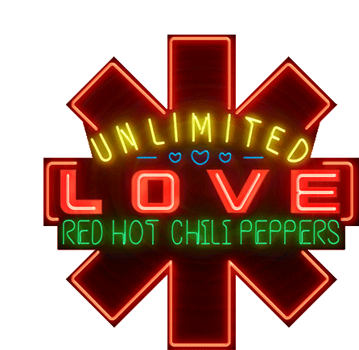
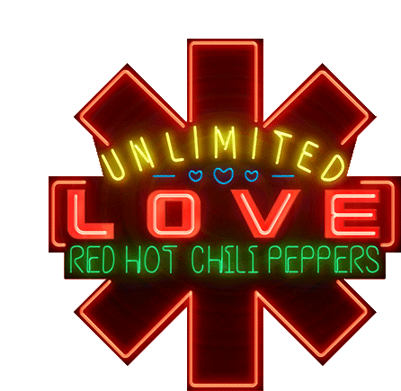

Red Hot Chili Peppers (também conhecido como Chili Peppers, RHCP ou Red Hot) é uma banda
de rock dos Estados Unidos formada em Los Angeles, Califórnia, em 13 de fevereiro de 1983. O
estilo musical do grupo consiste principalmente no funk rock, bem como elementos de outros
gêneros, tais como punk, rock alternativo, rap rock e rock psicodélico. A banda é constituída
pelos membros fundadores Anthony Kiedis (vocais) e Flea (baixo), juntamente com o baterista
de longa data Chad Smith e o guitarrista John Frusciante.
O Blood Sugar Sex Magik, foi primeiro grande sucesso do grupo lançado em 1991 e até hoje vendeu cerca de 14 milhões de cópias
em todo o mundo, além de estar entre os 200 melhores álbuns da história. Durante a turnê desse álbum, John Frusciante deixou
o grupo por ter lidado mal com o sucesso e seu vício em drogas aumentou, assim a banda recrutou Arik Marshall para concluir a
turnê. Depois Dave Navarro entra na banda, gravando One Hot Minute, os outros integrantes perceberam que ele não tinha o
espirito eufórico da banda e ele por sua vez desliga-se dos peppers. Embora bem sucedido comercialmente, o álbum não
conseguiu se igualar a aclamação crítica e popular de Blood Sugar Sex Magik, vendendo menos da metade que esse. Navarro saiu
do grupo logo após a turnê. John Frusciante, recém saído da reabilitação, voltou à banda em 1998 a pedido de Flea.
Californication, By the Way e Stadium Arcadium continuaram o sucesso do grupo. Depois de uma turnê mundial, o grupo entrou
em um hiato prolongado. Em 2009 John Frusciante anunciou que estava deixando a banda amigavelmente para se concentrar em
sua carreira solo e o guitarrista Josh Klinghoffer o substituiu até o final de 2019, quando a banda anunciou o retorno de Frusciante.
A banda lançou em Agosto de 2011 seu décimo álbum de estúdio I'm with You, que conseguiu ficar em primeiro em 18 países. Em
2016, lançou seu décimo primeiro álbum de estúdio, The Getaway. O álbum foi produzido por Danger Mouse, marcando a
primeira vez desde Mother's Milk que o Red Hot Chili Peppers não trabalham com Rubin. O álbum liderou as paradas em dez
países diferentes. Em Janeiro de 2020, a banda estava em processo de produção do seu décimo segundo álbum de estúdio,
Unlimited Love, que foi lançado em 2022.
O Red Hot Chili Peppers ganhou seis Grammy Award (sem contar o de melhor produtor do ano, vencido por Rick Rubin em
2007 por produzir o Stadium Arcadium) e já vendeu mais de 80 milhões de discos em todo o mundo. Atualmente a Banda detêm o
recorde de mais hits número 1 na Alternative Songs, e mais semanas no topo dessa lista, além de ter oito singles no Top 40
do Billboard Hot 100 (incluindo três no Top 10) e seis singles número um na Hot Mainstream Rock Tracks. Em 2008 a banda foi
homenageada com uma estrela na 1 623 Vine Street da Calçada da Fama de Hollywood e em 2012 foi introduzida no Rock and Roll
Hall of Fame.
1983–1984: Formação e primeiro álbum
O Red Hot Chili Peppers tem raízes desde 1979, nos intervalos entre aulas da Fairfax High School, em Hollywood, Los Angeles. Os garotos de 15 anos, Flea, Hillel Slovak e Jack Irons eram três amigos que tinham algumas ambições musicais formando a banda chamada Anthym. Um dos grandes admiradores dessa banda era Anthony Kiedis, também amigo de infância de Flea, Hillel e Irons.
Em fevereiro de 1983, a banda Gary and Neighbour's Voices iria tocar no clube Rhythm Lounge em Los Angeles e o vocalista Gary Allen sugeriu que Anthony Kiedis, juntamente com Flea e Hillel Slovak, realizassem a abertura do show para banda. Eles então fundaram uma banda chama "Tony Flow e os Miraculous Masters of Mayhem", porque de acordo com Anthony: "era assim que queríamos tocar, majestoso e caótico". Eles adicionaram Jack Irons na bateria. A banda tocou para um público de 30 pessoas e a apresentação envolveu com uma improvisando enquanto Kiedis cantava rap de um poema que ele havia escrito, chamado "Out in LA". Slovak e Irons já estavam comprometidos com outro grupo, What Is This?, que se destinava a ser uma performance única. No entanto, o desempenho foi tão animado que a banda foi convidada a voltar na semana seguinte. Eles estão escreveram mais uma música chamada "Get Up and Jump”, baseado na relação de Hillel com uma garota chamada Rona Frumpkin e depois, devido ao sucesso inesperado, a banda mudou seu nome para The Red Hot Chili Peppers, escrevendo mais músicas para seu repertório e tocando em vários shows nos clubes de Los Angeles. A explicação para o nome vem de um improviso de Anthony Kiedis que conta: "Eu estava caminhando em Hollywood Hills e vi esse nome piscando num arbusto psicodélico" (o arbusto era em formato de pimenta), mas essa história parece muito mais uma lenda ou piada de Anthony, do que a verdadeira história. O que parece ser mais próximo da realidade é que eles adoravam comida mexicana com bastante pimenta (chili), Flea era fã da banda de apoio de Louis Armstrong "Red Hot Peppers" e Anthony Kiedis não poderia esquecer o nome da banda que tocou num pub em Londres, a "Chili Willy and the Red Hot Peppers". Seis canções desses shows iniciais foram na fita da banda primeira demo, que os tornaram famosos.
Três meses depois eles recebem uma oferta da Run DMC num mini festival. No mesmo tempo que Hillel e Irons ainda tocavam no What Is This?, enquanto Flea continuava tocando com o Fear. No entanto, algo fazia com que o Red Hot Chili Peppers tivesse algo a mais. Um agente de talentos chamdo Lindy Goetz conheceu os Chili Peppers no mesmo ano, após ouvi-los tocando num bar chamado Kit Kat Club, e então os membros da banda visitaram os escritórios de Goetz e propuseram que ele empressariasse o grupo, o que ele concordou em fazer. Depois disso, eles gravaram seis demos no Bijou Stúdios e enviou para o Lindy, que enviou para as gravadoras e depois disso, conseguiu negociar um contrato de sete álbuns para a banda com a EMI Records e Enigma Records.
Após assinarem com ambas as gravadoras em outubro de 1983, Hillel Slovak e Jack Irons saiem da banda para se concentrar no What Is This?, que havia conseguido um contrato com a MCA Records algumas semanas antes, pois consideravam os Red Hot Chilli Peppers um projeto paralelo. Não teve outra, Anthony e Flea ficaram arrasados com a notícia e com a postura dos outros dois. Kiedis e Flea seriam obrigados a gravar no início do próximo ano, para contornar a situação eles recrutaram o baterista do Weirdos Cliff Martinez e após fazerem algumas audições, contraram o guitarrista Jack Sherman. Anthony e Flea sugeriu o músico Andy Gill para ser o produtor do álbum, um pedido que a gravadora aceitou. Todavia, surgiu um conflito musical entre eles, pois Andy Gill não dava liberdade para a banda criar melodias próprias além de querer que o som do álbum fosse "limpo" para ser mais aceito nas rádios. O primeiro álbum foi chamado de The Red Hot Chili Peppers, e foi uma grande decepção para a banda. O disco saiu em agosto de 1984 e não teve grandes atenções. No verão do mesmo ano, a MTV apresenta o RHCP no MTV News, o que, junto com canções nas rádios, ajudou a construir uma base de fãs.
O clipe de "True Men Don't Kill Coyotes" faz um sucesso rápido com uma ajudinha da MTV e logo é esquecido, porém os Peppers continuam a estender a lista de shows e começam a tocar na costa oeste e médio oeste dos Estados Unidos. Durante estas viagens o consumo de drogas é intensificado, além disso, o contato pessoal durante todo o dia começou a criar atritos entre Sherman e Kiedis que não o suportava porque acreditava que ele era politicamente correto demais para a banda e não tinha a mesma habilidade de Hillel, então, no começo de 1985, Kiedis e Flea expulsam Sherman da banda, que é substituído por Hillel Slovak. Anthony e Hillel começam a usar heroína com mais freqüência. A maior obsessão de Hillel era encontrar os ruídos de Hendrix.
 1985–1988: Freaky Styley, The Uplift Mofo Party Plan e morte de Hillel Slovak
1985–1988: Freaky Styley, The Uplift Mofo Party Plan e morte de Hillel Slovak
Em 1985, os Peppers completamente perdidos, batem na porta de George Clinton para que ele produzisse o novo álbum, e então obrigam a gravadora a aceitá-lo como o novo produtor da banda. Clinton fica impressionado com o conhecimento musical deles. Então vem o novo álbum da banda, o Freaky Styley, com sua gravação feita em Detroit, na fazenda de Clinton, sai em setembro de 1985 e recebe várias críticas positivas. O Red Hot Chili Peppers revive novamente, após o relativo fracasso do álbum anterior. Eles fizeram shows por todo os Estados Unidos e, no início de 1986, pisam pela primeira vez nos palcos europeus. Cliff Martinez deixa a banda e Jack Irons volta para os Peppers. Eles continuavam com toda a força para que tivessem o verdadeiro reconhecimento do público. Nesse ano eles apareceram no filme Tough Guys. Um fato curioso durante a turnê do Freaky Styley é que, em 1986, Kiedis toca em Grand Rapids, sua cidade natal pela primeira vez, e tem a "brilhante ideia" de usar as meias (Socks on Cocks), o que acaba sendo um escândalo na sua cidade, e ele vira a "ovelha-negra" do público local.
No final do ano de 1986, um grande problema entrou na banda, drogas. Kiedis tinha perdido qualquer noção da realidade e se entregara às drogas totalmente. Ele andava em becos e tinha contato com algumas gangues. Ele chegou ao ponto mais baixo de sua vida e passou a consumir drogas por baixo de uma ponte no centro de Los Angeles, porém a heroína não fazia o mesmo efeito de antes. Nesta época eles fizeram a pior turnê da história da banda e Kiedis foi convidado a se retirar pelo seu vício, e Flea o aconselha a se tratar, aí então ele percebe que as drogas não eram mais diversão e estavam invadindo sua vida. Kiedis vai se tratar e tem a ajuda de seu pai. Durante sua passagem na clínica ele conhece a acupuntura que acaba sendo um meio alternativo de aliviar a tensão dele. Sai limpo da clínica, escreve "Fight Like a Brave" e retorna ao RHCP. No verão de 1986, Flea se casa e logo começaria as preparações para o terceiro álbum. A banda ainda não tinha nenhuma música pronta e Rick Rubin se recusa a produzi-los. Entretanto, Michael Beinhorn aceita a tarefa e, em 4 de maio de 1987, os Peppers estão de volta na Capitol Studios, onde eles gravaram uma versão funk para a música de Bob Dylan, "Subteranean Homesick Blues" e outras músicas como "Special Secret Song Inside". O terceiro álbum fica acima de suas expectativas. The Uplift Mofo Party Plan sai em setembro de 1987 e fica no 143º lugar nas paradas, uma pequena vitória.
No começo de 1988, ao passo que o Red Hot Chili Peppers vinha ascendendo a cada trabalho e no caminho certo do sucesso, Hillel usava drogas cada vez mais. Flea já estava preocupado. Em maio, a banda vai para Inglaterra e numa manhã eles tiram a roupa e com apenas as famosas meias, fazem uma paródia da foto dos Beatles na Abbey Road. Logo após, a EMI lança The Abbey Road E.P., um álbum com apenas cinco músicas, incluindo a cover "Fire" de Jimi Hendrix. Em junho, os Peppers estão de volta a Los Angeles, onde Michael Beinhorn está esperando por eles para começar o novo álbum. Kiedis e Hillel começam a usar drogas novamente. E no meio de uma noite o telefone de Flea toca, ele pensara que estavam ligando para dizer que Kiedis havia morrido devido ao abuso das drogas, porém a vitima era outra. E em 27 de junho, Hillel é encontrado morto por overdose de heroína. Ele tinha apenas 26 anos. Kiedis então vai para um pequeno vilarejo no México, ele queria um lugar onde ninguém o conhecesse, para tentar se livrar das drogas. Diante da tragédia, Irons sai da banda sumindo por um tempo no mundo. Flea mergulha em projetos paralelos. Parecia que era o fim do Red Hot Chili Peppers.
1988–1990: Entrada de John Frusciante e Chad Smith, Mother's Milk
Anthony voltou para casa e Flea tornou-se pai de uma pequena menina chamada Clara, ocasião em que decidem reconstruir a banda em memória de seu grande amigo Hillel. Durante este tempo houve a integração do baterista D.H. Peligro e do guitarrista DeWayne McKnight nos Peppers. Porém, devido a atritos com Kiedis e Flea, McKnight é demitido, até que finalmente acham um novo guitarrista, John Frusciante de apenas 18 anos, que era um grande fã dos Peppers e de Hendrix. Quando aconteceu o primeiro show com a banda os fãs não acreditaram que ele nunca tivesse tocado com os Peppers antes. "John era absolutamente um clone de Hillel. Ele não toca somente igual ao Hillel, ele se move como o Hillel…", disse Alain Johannes. Coincidência ou não, John tinha realmente todo o estilo de Hillel pois era o seu ídolo. Devido a seus problemas contínuos com drogas e álcool, a banda decidiu demitir Peligro em novembro de 1988, e, depois de muito procurar, os Peppers encontram um novo baterista, Chad Smith que veio de Detroit.
Em fevereiro de 1989 os Peppers, com sua nova formação, começam novamente. Em abril Kiedis tira toda sua roupa em frente a uma mulher no backstage. Um ano depois ele tem que se justificar perante um juiz na Virgínia. Houve outro incidente com Flea e Chad durante o MTV Spring Break Party e uma fã. Ultrapassadas as polêmicas, a banda começou a se dar muito bem. Anthony Kiedis e John Frusciante tornaram-se grandes amigos. Mother's Milk foi lançado em agosto de 1989 a partir de um trabalho longo e doloroso, principalmente porque Frusciante e Michael Beinhorn, o novo produtor, não se davam nada bem. O título do novo trabalho reflete a nova mentalidade do conjunto: "O leite materno nutre e desintoxica. Quando você o bebe, você se sente bem e saudável. E isso é o que a gente quer que nossa música represente", disse Kiedis sobre o recém lançado álbum.
O disco Mother's Milk contém onze músicas e a cover de "Higher Ground" de Stevie Wonder e "Fire" de Jimi Hendrix, na qual Hillel participa. O primeiro single, "Knock me Down", foi lançado em memória de Hillel. Flea ainda toca trompete em "Subway to Venus", "Taste The Pain" e "Pretty Little Ditty". Finalmente os Peppers fizeram um álbum que fez sucesso nas paradas e vendeu 5 milhões de cópias em todo o mundo. Começaram uma turnê na Europa e deixaram os britânicos de cabelos em pé. Os RHCP, que tinham uma certa implicância com a Inglaterra e não escondiam isso de ninguém, fizeram um show completamente alucinante. Flea tocou baixo de cabeça para baixo, sendo amarrado pelos pés. Frusciante dava ótimas ideias para a banda. Kiedis e Flea começaram a considerar a ideia de lançar um álbum duplo porém não achavam que a EMI estivesse fazendo um bom trabalho de divulgação. Precisavam mudar de gravadora. Conseguiram se livrar do contrato e receberam inúmeras propostas de outras gravadoras, até fecharem com a Warner em 1991.
 1990–1992: Blood Sugar Sex Magik, Sucesso, Saída de Frusciante
1990–1992: Blood Sugar Sex Magik, Sucesso, Saída de Frusciante
O verdadeiro sucesso estava por vir. Com o novo contrato, também muda o produtor, Rick Rubin era o novo. As gravações aconteceram numa mansão que pertenceu a Rudolph Valentino, em Laurel Canyon. Durante oito semanas Rick usou sua estratégia para gravação: os músicos tocaram frente a frente, no mesmo quarto, usando menos tecnologia possível.
O genial Blood Sugar Sex Magik foi lançado no final de setembro de 1991. O álbum teve vários Hits, como: "Give It Away", "Under the Bridge" e "Suck My Kiss" que atingem o topo das paradas no mundo inteiro. Resultado, o disco torna-se sucesso mundial, vendendo nada menos que 19 milhões de cópias, apesar de haver uma grande concorrência naquela época, as bandas grunges, que para Kiedis não era problema algum porque primeiramente simpatizava com elas e tinha amigos como Nirvana, Pearl Jam, Alice in Chains e depois porque sabia que o estilo dessas bandas não tinha nada a ver com o som que eles faziam.
Eles gravaram o primeiro clipe do álbum, "Give It Away", onde foram levados para o Deserto de Mojave e foram pintados de prata. Em seguida "Under the Bridge" estourou no mundo todo e as pessoas queriam conhecer a tal ponte citada na música, viviam lhe perguntando a localização e ele respondia: "No centro da cidade, mas eu não queria falar mais nada sobre isso. As pessoas estão tentando encontrá-la, não é? Fuck! Não é uma atração turística, pelo amor de Deus. É o território das gangues, vocês estão procurando uma bala nos seus miolos?". Uma curiosidade, durante uma apresentação na Europa, os Chili Peppers foram avisados para não se comportarem de forma muito sexual no palco e muito menos usarem meias, porem como já era de costume da banda contestar, eles fingiram concordar com as exigências, mas quando subiram ao palco estavam vestidos de damas da idade média, imediatamente foram expulsos do palco e tiveram que se explicar para toda a imprensa europeia.
A turnê foi enorme e muito cansativa. Em consequência, John Frusciante não suporta toda essa pressão e constantes viagens e resolve deixar a banda em maio de 1992, ficando um problema nas mãos dos Peppers, enquanto faltavam apenas poucos dias para o Lollapalooza, onde eram uma das atrações principais. Com a correria interna, pois tiveram que arrumar rapidamente um substituto para John, a vaga foi ocupada por Arik Marshall que praticava até cinco horas por dia durante três semanas. A banda estava esgotada, não aguentava mais o ritmo dos shows, muitas coisas passavam pelas cabeças dos Peppers, principalmente na de Anthony Kiedis, ele gostava de Arik, achava que era um bom músico, mas não tinha a mesma criatividade de Frusciante, do qual sentia falta, mas sua raiva e decepção eram maiores, ele tinha certeza que precisava arranjar um outro guitarrista. Logo depois da saída de Arik Marshall, Jesse Tobias entrou em seu lugar, mas não permaneceu por muito tempo.
 1993–1997: Dave Navarro, One Hot Minute
1993–1997: Dave Navarro, One Hot Minute
Os problemas não pararam por aí. Em 1993, após a primeira passagem da banda pelo Brasil (para a quarta edição do festival Hollywood Rock, com shows no Rio e em São Paulo), Flea foi diagnosticado com fadiga crônica e teve que descansar durante um ano para que se recuperasse. Em 31 de outubro, os Peppers perdem um dos seus melhores amigos: River Phoenix. Quando isto aconteceu, Flea ficou muito doente com a perda de uma importante pessoa de sua vida. Dave Navarro (ex-guitarrista do Jane's Addiction), que estava com o "Deconstruction" foi solicitado novamente para entrar no Red Hot Chili Peppers, para substituir definitivamente John Frusciante. E em 5 de setembro, Dave Navarro é anunciado como novo guitarrista do Red Hot Chili Peppers.
O primeiro show de Navarro com a banda foi no Woodstock '94, onde eles estavam vestidos de lâmpadas. A banda fez uma breve turnê que incluiu um concerto que abriu um show do Rolling Stones. De acordo com Kiedis, no entanto, abrir show para os Stones foi uma experiência horrível. No começo foi dificil começarem a tocar juntos com a nova formação e continuou a ser um problema durante o próximo ano. Kiedis foi também lutando com seu vício em heroína, e através de um procedimento odontológico em que um viciante sedativo, Valium, foi usado, levou a recaída de Anthony, e o fez voltar a ser dependentes de drogas. Após o Woodstock, eles começam a trabalhar no novo álbum e chamam novamente Rick Rubin para produzi-lo. Ao contrário do Blood Sugar Sex Magik, a banda foi para o Hawaii buscar inspiração, eles trocaram o silêncio da mansão por uma viagem descontraída e "barulhenta". Em abril de 1994, Flea fica sabendo do suicídio de Kurt Cobain através da televisão, ele fica chocado e conta para Kiedis, que começa a fazer uma reflexão sobre sua vida, ele escreveu a letra de "Tearjerker" pensando na morte de Kurt, afinal eles eram amigos e Kiedis tinha uma admiração profunda por tudo que Kurt representava. O nome do novo álbum passou por muitas alterações, assim como também a lista de faixas, o que causou muitas dúvidas na banda. Os títulos considerados naquela época para o novo álbum eram: "Hypersensitive", "Turtlehead", "Black Fish Ferris Wheel", "The Blight Album" e "The Good and The Bad Moods of The Red Hot Chili Peppers", até chegar ao nome definitivo. One Hot Minute foi lançado em 8 de setembro de 1995.
O disco reflete o momento difícil pelo qual passava os integrantes, tendo um clima bastante melancólico nas músicas que compõe o trabalho, principalmente nas baladas. Kiedis tinha problemas com os pais de Jamie, sua namorada na época, eles não aceitavam que sua filha de 17 anos se envolvesse com um rockstar de 31 (e é dessa história nasceu a letra da canção "Let's Make Evil"). One Hot Minute obtém boa repercussão, com sucessos como "My Friends", "Warped" e "Aeroplane", porém fraca se comparada à do trabalho anterior. Após a turnê mundial, o Red Hot Chili Peppers retorna para casa e agora planeja o novo álbum sem data para o lançamento. Enquanto isso, John Frusciante se afundava nas drogas, chegando a beirar a morte. E no dia 4 de abril de 1998, Dave Navarro anuncia a sua saída do Red Hot Chili Peppers para dar uma maior atenção ao seu projeto "Spread". Dave diz que mesmo não estando com os Peppers eles serão amigos eternamente.
 1998–2001: Retorno de Frusciante, Californication
1998–2001: Retorno de Frusciante, Californication
Nos anos seguintes a sua saída da banda, tornou-se público que John Frusciante tinha desenvolvido uma dependência de heroína e cocaína, que o deixou em situação de pobreza e de quase morte. Admitiu ser internado no Las Encinas Drug Rehabilitation Center em janeiro de 1998. Ele concluiu o processo em fevereiro daquele ano e começou a alugar um pequeno apartamento em Silver Lake. Ele adquiriu muitas lesões e problemas nos anos de seu vício, exigindo uma cirurgia, que deixou cicatrizes permanentes em seus braços, um nariz reestruturado e novos dentes para prevenir uma infecção fatal.
Após a partida de Navarro no início de 1998, o Red Hot Chili Peppers estavam à beira de acabar. Flea disse a Kiedis, que a única maneira que ele poderia imaginar sua continuidade na banda era se John voltasse". Com Frusciante livre de seus vícios e doenças, Kiedis e Flea pensaram que era o momento adequado para convidá-lo a voltar. Em abril de 1998, quando Flea visitou sua casa e pediu-lhe para se juntar à banda, Frusciante começou a soluçar e disse: "nada me faria mais feliz no mundo".
Apesar de exaltação da banda, Frusciante estava mentalmente e fisicamente desgastado, e não tinha tocado com a banda desde a sua partida. Ele havia perdido suas guitarras em um incêndio em casa do qual ele escapou por pouco, experimentando um momento difícil de retomar a sua vida anterior. O retorno de Frusciante tinha restaurado um componente-chave no som do Red Hot Chili Peppers, assim como uma moral saudável. Ele trouxe com ele sua profunda devoção à música, que teve um impacto sobre o estilo da banda durante a gravação do álbum. Frusciante tem dito com frequência que seu trabalho em "Californication" era seu favorito.
Californication produziu muitos hits como: "Scar Tissue", "Otherside", "Californication" e "Around the World". "Scar Tissue" ganhou o Prêmio Grammy 2000 de Melhor Canção Rock. Foi tocada na cerimônia e incluiu uma breve jam com o rapper Snoop Dogg. Californication ganhou aceitação positiva, em contraste com seu antecessor menos popular, One Hot Minute, sendo sucesso no mundo inteiro. Embora muitos críticos tenham creditado o sucesso do álbum ao retorno de Frusciante, eles também notaram que os vocais de Kiedis tinha melhorado muito.
Em julho de 1999, como parte da banda da turnê do álbum, a banda tocou no Woodstock 1999, que se tornou famoso pela violência. Cerca de 10 minutos antes do show, eles foram convidados pela meia irmã de Jimi Hendrix para tocar um cover de canções de seu irmão. A banda decidiu tocar seu clássico "Fire". Mas em atos de vandalismo, várias pessoas tocaram fogo. A apresentação se transformou em violência quando várias mulheres que haviam feito "crowd surfing" e "mosh" foram estupradas e a propriedade vizinha do festival foi saqueada e destruída. Kiedis sentiu que "Ficou claro que esta situação não tinha nada a ver com Woodstock. Não foi o símbolo de paz e amor, mas da ganância ... Nós acordamos e vimos jornais e emissoras de rádio caluniando-nos por tocar 'Fire'".
Em setembro de 2000, os Peppers foram nomeados para cinco MTV Video Music Awards, incluindo Vídeo do Ano, que voltou a perder; no entanto eles conseguiram ganhar dois prêmios com Californication. O Peppers também foram homenageados com o MTV Video Vanguard Award que é dado aos músicos que tiveram um efeito profundo sobre a cultura MTV.
Em 2001, o Red Hot Chili Peppers lançou seu primeiro concerto de DVD, Off the Map. As filmagens foram pegadas de dois concertos diferentes, mas foi juntada para parecer um só.
Em 2001, a banda participou da 3.ª edição do Rock in Rio, uma das mais emocionantes de todas as edições do festival, por atrair nada mais nada menos do que 250 mil pessoas na arena, a maior quantidade de pessoas conseguidas por eles em toda a história da banda, e em toda a história do festival.
 2002–2004: By the Way, Live at Slane Castle e Greatest Hits
2002–2004: By the Way, Live at Slane Castle e Greatest Hits
Em julho de 2002, a banda lança o seu oitavo disco da carreira, intitulado By the Way. Todos os integrantes se livraram de vez das drogas. E assim continuava uma série de sucessos, mesmo sem as drogas. O álbum vendeu mais de um milhão de cópias só na primeira semana do lançamento, recebendo muitas críticas dos fãs, pois praticamente só haviam baladas românticas. Muito provavelmente por ter sido o primeiro álbum em anos que a banda fez sem usar nenhum tipo de droga. Mas, mesmo deixando o funk rock um pouco apagado, o álbum tinha algumas canções de destaque, como "Dosed", "The Zephyr Song", "By the Way" e "Can't Stop". Também foi nesse álbum que surgiu uma das primeiras críticas à mídia vinda dos Peppers, com a canção "Throw Away Your Television" (Jogue fora sua televisão).
Em novembro de 2003, a banda lança o Greatest Hits, álbum com algumas das músicas que fizeram mais sucesso durante toda a carreira dos Chili Peppers. Teve também duas músicas inéditas: "Fortune Faded" e "Save the Population". Dentre as faixas do álbum By the Way, as canções "Universally Speaking" e "By the Way" foram inclusos na coletânea. Também nesse mesmo ano, a banda faz um show que virou DVD, o Live at Slane Castle. O show foi na Irlanda, em 23 de agosto de 2003.
Em 2004, a banda lança seu primeiro álbum ao vivo, o Live in Hyde Park, na Inglaterra, no qual foi feito dois CDs do show. Também foram tocadas duas músicas inéditas da banda; "Rolling Sly Stone" e "Leverage of Space". Em 2005, a banda faz poucos shows, pois estavam todos cansados com a turnê mundial do álbum By the Way. Nesse mesmo ano, a banda participou de um evento beneficente no "React Now" no dia 9 de setembro de 2005, em Hollywood, Califórnia.
 2005–2007: Stadium Arcadium
2005–2007: Stadium Arcadium
Em 2006 foi lançado o álbum duplo Stadium Arcadium, nono álbum de estúdio da banda, lançado em 5 de maio através da Warner Bros. Records. O álbum vendeu 442 mil cópias nos Estados Unidos na primeira semana e estreou em primeiro lugar na Billboard 200. Os singles "Snow ((Hey Oh))", "Tell Me Baby" e "Dani California" emplacam. O álbum duplo possui dois CDs intitulados "Mars" e "Júpiter". Destaque para "Dani California" que é a primeira canção do álbum duplo. Planejado inicialmente para ser lançado como uma trilogia em partes separadas, o álbum duplo, compila as 28 melhores músicas gravadas pela banda em parceria com o produtor Rick Rubin. Com mais de 13 milhões de cópias comercializadas ao redor do mundo, o álbum se tornou o mais vendido de 2006. No clipe de "Dani California" algumas bandas são homenageadas, como Sex Pistols, Nirvana e The Beatles. Dani California é uma personagem da cabeça de Anthony. Ela também aparece em outras duas músicas da banda; "By the Way" e "Californication".
Em 2007, Josh Klinghoffer se uniu à banda, graças ao seu colega e parceiro musical John Frusciante, para a última parte da turnê do álbum como membro de apoio, tocando guitarra de apoio, teclado e backing vocals (principalmente na canção So Much I). Josh já havia aparecido nos bastidores de 2001 do DVD Off the Map. Foi a última turnê de Frusciante na banda, antes de sua segunda saída, e a primeira de Klinghoffer.
Em fevereiro de 2007, a banda concorreu na 49.ª edição do Grammy Awards em Staples Center, Los Angeles. O álbum Stadium Arcadium foi indicado em sete categorias e ganhou quatro grandes prêmios: "Melhor Performance de Rock em Dupla ou Grupo" (Dani California), "Melhor Música Rock" (Dani California), "Melhor Álbum de Rock" (Stadium Arcadium), "Melhor Disco em Edição Especial (Box)" (Stadium Arcadium), além de "Produtor do Ano" (Rick Rubin).
2008–2009: Hiato, Segunda saída de Frusciante
Anthony Kiedis disse em entrevista à Rolling Stone publicada no dia 20 de maio de 2008, que o Red Hot Chili Peppers dariam uma pausa. Kiedis disse que banda está desgastada a partir de seus anos de trabalho sem interrupções desde Californication. Kiedis explicou que ele está atualmente preocupado com questões de cuidar de seu novo filho, enquanto que Flea está experimentando novas ideias musicais, Frusciante está continuando a sua carreira solo, e Chad Smith está com vários projetos com sua nova 'superbanda'. A banda tem planos de permanecer no hiato de "no mínimo um ano." No entanto, Kiedis afirmou que ele está ansioso para começar a pensar em novo projeto. Em entrevista à Rhythm Magazine, Chad Smith disse: "Nós estivemos em turnê por um ano e meio, então dissemos 'vamos tirar um ano de férias.' Nós não tiramos férias desde que o John voltou para a banda, há quase dez anos. Nós escrevemos músicas, gravamos, daí saímos em turnês de um ano e meio, depois escrevemos mais, e já fizemos esse ciclo três vezes seguidas. Hora de dar uma paradinha. Anthony estava para ser pai, John quer fazer um disco solo, Flea tem as coisas dele para cuidar. Todos precisavam de uma pausa de ser os Chili Peppers." No entanto, Chad disse que a banda não se separou e que terá planos junto com outros membros. Chad Smith, no entanto, tem projetos com Sammy Hagar, Joe Satriani e Michael Anthony com a superbanda Chickenfoot.
Em outubro de 2008, o baixista Flea anunciou que o RHCP fará uma pausa por estarem "emocionalmente esgotados". "Trabalhamos arduamente durante muito tempo", explicou o baixista Flea ao Los Angeles Times. "Estávamos precisando ficar longe de tudo para olhar as coisas sob uma nova perspectiva." Flea disse também que se matriculou na University of Southern California para estudar música. "Estou grato que minha educação musical tenha evoluído, mas é divertido aprender coisas que eu nunca havia estudado antes."
John Frusciante lançou mais um novo álbum na carreira solo, aproveitando o período de férias do Red Hot Chili Peppers. O trabalho foi batizado de The Empyrean, e o lançamento foi em 20 de janeiro de 2009, pelo selo americano Record Collection. O disco trouxe dois convidados especiais, um deles é o ex-guitarrista da banda inglesa The Smiths, Johnny Marr. O outro convidado é o baixista Flea, parceiro de Frusciante no RHCP. The Empyrean é o décimo álbum solo do guitarrista e o sétimo desde que ele voltou ao Red Hot Chili Peppers em 1998.
John Frusciante deu uma entrevista à revista online The Horse Chronicles onde afirma que não deixou a banda e que sempre que os Red Hot Chili Peppers faziam uma pausa ele saía da banda. Mas em 16 de dezembro de 2009, John escreveu em seu site um breve esclarecimento sobre os boatos que corriam na época. De acordo com a postagem, ele teria deixado a banda há um ano. "Quando eu saí da banda, há mais ou menos um ano, estávamos num hiato de tempo indefinido. Não houve drama ou raiva, e os outros caras foram muito compreensivos. Eles me apoiam a fazer qualquer coisa que me faça feliz e eu também os apoio."
 2010–2012: Josh Klinghoffer, I'm with You, introdução ao Hall da Fama do Rock
2010–2012: Josh Klinghoffer, I'm with You, introdução ao Hall da Fama do Rock
A banda, junto com Josh Klinghoffer na guitarra, fez seu retorno ao vivo em 29 de janeiro de 2010, em homenagem a Neil Young com um cover de "A Man Needs a Maid" no MusiCares. Em 8 de fevereiro de 2010, Klinghoffer foi oficialmente confirmado como substituto oficial de Frusciante.
Em setembro de 2010, o Red Hot Chili Peppers anunciou que suas músicas não seriam apresentadas no programa de televisão popular Glee, com Anthony afirmando que não queria que suas músicas queridas fossem aparecer no programa. Os Chili Peppers são uma das muitas bandas de rock que recusou uma oferta para ter suas músicas no Glee.
Em 5 de junho de 2011, o site oficial da banda anunciou que o novo álbum seria lançado em 30 de agosto de 2011 (embora poucos dias antes em outros países) e intitulado I'm with You. Rick Rubin falou sobre o novo álbum em 20 de junho de 2011 e disse que a banda tinha material suficiente para fazer outro álbum duplo, mas sentiu que não deveriam fazer isso novamente, apesar de ter sido uma decisão difícil não liberar todo o material que trabalhou. O plano original era de doze canções, mas, então eles acabaram colocando quatorze músicas do álbum. Sobre o som e o estilo de Josh, Rubin disse que, estilisticamente, ele está muito próximo de John Frusciante embora seu som soasse como um Red Hot Chili Peppers que você nunca ouviu antes. Flea disse para Rolling Stone que os álbuns Exile on Main St. e Tattoo You foram as principais influências sobre o novo álbum. Kiedis disse também que Klinghoffer desempenhou um grande papel, e co-escreveu o álbum com ele, Flea, e Smith.
Em 23 de junho de 2011 em uma entrevista, Flea falou do retorno da banda e como ele quase a deixou durante a sua pausa. Flea disse que "Eu senti que queria ter dois anos distante para realmente olhar e ver se a banda era algo que ainda deveríamos estar fazendo." Ele disse que as coisas tinham chegado a um ponto disfuncional e sem graça, embora achasse que estavam fazendo grandes discos, shows fortes e poderosos, como uma grande banda. Durante o tempo em hiato, Flea disse o que o fez querer continuar na banda: "Eu percebi que Anthony é como meu irmão, eu o amo muito, e nós começamos essa banda quando éramos crianças. Eu queria manter esse curso, eu nunca quero deixar isso acabar. Eu disse para Anthony: "Juntos vamos fazer isso, vamos fazer este álbum, eu te amo, e vamos arrasar".
Anthony disse que o crédito vai para Josh para chegar ao título do álbum. Josh disse que o título veio do nada mas que parecia perfeito, não só para o novo álbum mas também para o momento de suas carreiras.
No dia 29 de agosto, um dia antes do previsto inicialmente, I'm with You foi lançado. O álbum estreou em 2º lugar no Top 200 da Billboard, vendendo 228 926 cópias na primeira semana nos EUA. Além disso ficou em primeiro lugar em 17 países e segundo em 5 países. O primeiro single do álbum, "The Adventures of Raindance Maggie", foi lançado nas rádios em 18 de julho de 2011, mesmo após ter sido vazado 3 três dias antes do esperado. Em 10 de agosto de 2011, a canção tornou-se recorde da banda sendo o décimo segundo single do grupo a ficar em primeiro na parada da Billboard Alternative Songs. Para o clipe da canção, foram gravadas duas versões, na qual foi escolhida a segunda, em que a banda subiu ao telhado de um edifício em Venice Beach, com o diretor Marc Klasfeld. O clipe foi lançado no dia 17 de agosto de 2011. "Monarchy of Roses" foi lançado como segundo single e o clipe também dirigido por Marc Klasfeld e foi lançado em 14 de novembro de 2011. O single se tornou um hit menor, não conseguiu chegar ao topo das paradas como single anterior. "Look Around" foi lançado no início de 2012, enquanto no Brasil, devido a canção "Did I Let You Know" ter sido pedida para rádio, a canção foi lançada como single exclusivamente no país, com um clipe feito pelos fãs. "Brendan's Death Song" será o próximo single.
Em 30 de agosto, a banda apareceu em cinemas de todo o mundo ao vivo via-satélite de Colônia, Alemanha, para vários cinemas de todo o mundo, executando o álbum inteiro (menos "Even You Brutus?"), juntamente com "Me and My Friends" e "Give It Away". A turnê para divulgação do álbum começou oficialmente em agosto de 2011 com shows na Ásia e alguns na Europa. No dia 24 de agosto, o Red Hot Chili Peppers realizou um show no Club Nokia, em Los Angeles. O show foi para arrecadar fundos para o Silverlake Conservatory Of Music. Com ingressos esgotados, o show durou cerca de 2 horas, rendendo 1 milhão de dólares para fundos do Conservatório que ajuda crianças a ingressar na música através de bolsas de estudo. No dia 11 de setembro a banda fez sua turnê na América Latina onde tocou na Colômbia, Costa Rica, Peru, Chile, Argentina e no Brasil, onde fizeram dois shows, um na Arena Anhembi em São Paulo no dia 21 de setembro de 2011 para um público de 30 mil pessoas e no Rock in Rio em 24 de setembro de 2011. Foi a primeira passagem da banda no país desde 2002, durante a turnê By the Way. A banda é esperada para shows nos Estados Unidos e na Austrália em 2012. A turnê deve se estender até 2013. Vários shows da próxima turnê estarão disponíveis para compra como downloads através LiveChiliPeppers.com.
Em 19 de setembro a banda foi nomeada para duas categorias do MTV Europe Music Awards: Melhor Grupo de Rock e Melhor Artista ao Vivo e nomeado Melhor Grupo de 2012 na People's Choice Awards. I'm with You foi nomeado ao Grammy Award de 2012 na categoria Melhor Álbum de Rock.
Depois de ser nomeado um finalista em setembro de 2011 e não para fazer da corte final dos dois anos anteriores, em 7 de dezembro de 2011, o Red Hot Chili Peppers foram anunciados como parte dos induzidos ao Museu do Rock and Roll. Anthony Kiedis disse que "A parte mais emocionante para mim foi pensar no Hillel Slovak. Foi aí que me pegou". A banda foi introduzida ao Hall da Fama do Rock em 14 de abril de 2012. Durante a cerimônia a banda tocou quatro canções: "By the Way", "The Adventures of Rain Dance Maggie" e "Give it Away", incluindo Irons e Martinez na bateria. No final, a banda tocou "Higher Ground" com Slash, Billie Joe Armstrong, Ron Wood e George Clinton. O comediante Chris Rock fez o discurso de indução.
Em 29 de março a banda lançou o 2011 Live EP, com canções ao vivo lançado através de seu website como download MP3 gratuito, que foi Chad Smith quem selecionou as cinco canções. Em 1 de maio de 2012 o grupo fez o lançamento do Rock & Roll Hall of Fame Covers EP através de download digital, que consistia em covers de artistas que influenciaram a banda.
Em 29 de maio de 2012, Flea anunciou que dezoito novas canções, que ficaram de fora do I'm with You, seriam liberados nos próximos seis meses em sete polegadas (vinil) e download digital, intitulado I'm with You Sessions. Ele também confirmou que a banda tem escrito novas músicas durante a turnê.
 2013–2017: The Getaway
2013–2017: The Getaway
Chad Smith revelou que a turnê do álbum I'm With You terminaria em abril de 2013, e, após a turnê, a banda faria uma pequena pausa antes de trabalhar em seu próximo álbum. Smith disse: "Estamos todos re-energizados e Josh Klinghoffer está tocando melhor a cada dia e estamos mais conectados como uma banda agora, obviamente, através do tempo que estamos juntos". Em março de 2013, Chad Smith respondeu a um fã em sua página no Twitter perguntando sobre o próximo álbum em que Smith respondeu: "vamos começar a escrever mais músicas em setembro".[56] Porém, devido a compromissos de Flea com o Atoms for Peace os planos para começar a escrever um novo álbum foram adiados para o início de 2014. Entre maio e setembro de 2013 a banda tocou em alguns festivais pelos Estados Unidos e fez a sua primeira apresentação da carreira no Alasca. Em novembro de 2013,retornaram para o Brasil sendo a atração principal das etapas de Belo Horizonte e Rio de Janeiro do Circuito Banco do Brasil além de uma apresentação solo na Arena Anhembi em São Paulo e uma no Jockey Club em Assunção, no Paraguai, sendo a primeira passagem da banda por terras paraguaias.[carece de fontes]
Em 10 de janeiro de 2014 foi anunciado que a banda iria se apresentar, ao lado de Bruno Mars, no intervalo do Super Bowl XLVIII em 2 de fevereiro de 2014. A apresentação quebrou os recordes de audiência entre todos os shows de intervalo da história do Super Bowl, sendo assistida por 115,3 milhões de telespectadores. A apresentação da banda gerou polêmica pelo uso de bases pré-gravadas, e levou Flea a fazer uma justificação em público pelo site da banda.
Após a apresentação no Super Bowl, a banda começou a compor material para o novo disco. Em junho de 2014, Chad Smith disse que a banda já havia composto 20 músicas e se preparava para compor mais algumas.
No dia 17 de novembro de 2014, Kiedis deu uma entrevista na rádio KROQ, onde anunciou que a banda iria voltar para o estúdio em dezembro para gravar seu álbum recém-escrito. Kiedis disse que quer que o novo álbum seja de apenas 13 músicas, no entanto, é provável que a banda irá "colocar mais 10 músicas em cima disso". Kiedis sentiu que o novo álbum vai mostrar a evolução de Josh Klinghoffer como guitarrista e que o novo material vai, certamente, destacá-lo. Em 21 de novembro, em Nova York e com Rolling Stones, David Fricke, Kiedis confirmou que, após 23 anos e seis álbuns, Rick Rubin não estaria produzindo o próximo álbum e esta seria a primeira vez, desde 1989, que a banda trabalharia com alguém que não fosse Rubin. Kiedis disse: "Rick Rubin infelizmente não está produzindo este álbum. Estamos prestes a experimentar novidades junto de alguns outros profissionais diferentes, que são bons em produzir música. É muito emocionante. Eu me sinto como se fosse o melhor lote de canções do que tivemos em um longo tempo e eu nunca vi esses meninos com tanta fome de arregaçar as mangas e fazer um disco".
Em 10 de janeiro de 2015 a banda fez seu primeiro show de ano novo e o primeiro desde sua turnê, que terminou em junho do ano anterior, quando foram convidados pelo ator Sean Penn para realizar um show surpresa de 30 minutos, com seis músicas do set, arrecadando fundos para seu fundraiser anual, Sean Penn & Friends Help Haiti Home, que foi fundada por Penn em 2010. O evento longo de quase quatro horas, realizado em Beverly Hills, na Califórnia, contou com muitas celebridades, incluindo o ex- presidente dos Estados Unidos, Bill Clinton, e levantou mais de US$ 6 milhões.
Em 31 de janeiro de 2015 Flea postou em sua página no Twitter dizendo que Danger Mouse estaria substituindo Rubin como o próximo produtor. O tweet foi removido por razões desconhecidas, pouco depois de ser publicado. Em 15 de fevereiro de 2015, Flea novamente postou uma atualização sobre álbum em sua página no Twitter dizendo "Nós ainda estamos escrevendo e fazendo demos, o material está indo para a edição em poucas semanas!". Um dia depois, Flea teve um braço quebrado durante uma viagem de esqui.
Em 2016 os Red Hot Chili Peppers começaram a nova turnê fazendo o primeiro show em fevereiro no Ace Hotel em Los Angeles e, já em Abril, a banda californiana fez um show no dia 24 em New Orleans. Nesse período, Dave Rat, engenheiro de som da banda desde fevereiro de 1991, anunciou que após o show da banda de 22 de janeiro de 2017 no Target Center em Minneapolis, que ele não estaria mais trabalhando com a banda. "Eu realmente amo Flea, Anthony, Chad, Josh e todos os meus amigos queridos e próximos eu considero a família tanto na estrada agora e aqueles que se mudaram para outras aventuras ao longo dos anos. Estou muito feliz em dizer que eu tenho dedicado significativo tempo documentando uma turnê com o Peppers em periódicos, mas também tenho milhares de fotos incríveis abrangendo décadas de sorrisos e desafios ", disse Rat. Em 5 de maio de 2016, lançaram o primeiro single - Dark Necessities - de seu 11º album, intitulado The Getaway. Na mesma data, soltaram outras informações, como a data de lançamento - 17 de junho de 2016 - e a tracklist. O videoclipe de "Dark Necessities", dirigido pela atriz Olivia Wilde, foi lançado em 16 de junho de 2016. "Go Robot" era esperado para ser o primeiro single, como queria o selo da banda, porém, foi lançado como o segundo single do álbum. "We Turn Red" foi lançado na página do YouTube da banda em 9 de junho de 2016.
The Getaway fez sua estreia no número 2 na Billboard 200, mas não conseguiu destronar Drake, que teve o álbum número um por oito semanas consecutivas. The Getaway vendeu mais do que Drake em sua semana de abertura, com vendas de 108 mil a 33 mil (na verdade, colocando-o em 4.º lugar na semana), mas devido ao álbum, Drake conseguiu liderar a banda para a primeira posição nas paradas. Em 1 de julho de 2016, o EP Live In Paris foi lançado exclusivamente pelo site de streaming de música Deezer. "Go Robot" foi anunciado como o segundo single do The Getaway. Em 26 de julho de 2016, os membros da banda começaram a postar imagens do set do videoclipe.
The Getaway foi reeditado em edição limitada de vinil rosa em 27 de setembro de 2016 como parte de "10 Bands 1 Cause". Todo o dinheiro das vendas da re-emissão foi para o Gilda's Club NYC, uma organização que fornece apoio da comunidade tanto para aqueles diagnosticados com câncer quanto para seus cuidadores.
A turnê mundial Getaway terminou em 18 de outubro de 2017. A turnê consistiu em 151 shows com duração de um ano e quase cinco meses. A banda apresentou um pequeno set no evento de arrecadação de fundos Stand Up for Heroes de 2017 no The Theater at Madison Square Garden em Nova York em 7 de novembro de 2017. O show também contou com os comediantes Jon Stewart, John Oliver, Conan O'Brien e Trevor Noah. O fundraiser foi para a Fundação Bob Woodruff, que apóia veteranos feridos e suas famílias. “Os Red Hot Chili Peppers trazem tanta energia para o palco e são uma das minhas bandas favoritas”, disse Bob Woodruff. Em 14 de dezembro de 2017, a banda encabeçou o Concerto de Benefícios Band Together 2 no Bill Graham Civic Auditorium, em San Francisco. O dinheiro arrecadado do show vai para o Tipping Point Emergency Relief Fund, que desde 2005 arrecadou US $ 150 milhões para educar, empregar, abrigar e apoiar os necessitados na área da baía.
2017–2019: Últimos shows com Josh Klinghoffer, Retorno de John Frusciante
Em 18 de março de 2017, o vocalista Anthony Kiedis deu uma entrevista a uma estação de rádio de Vancouver e indicou que, para o seguimento da banda ao The Getaway, eles provavelmente trabalhariam novamente com o Danger Mouse como seu produtor. Ele disse: "Eu acho que é bom trabalhar com o mesmo cara de novo, você sabe que você teve sua primeira experiência. Acho que devemos a nós mesmos começar do começo com esse cara e ver o que podemos realizar".
Em uma entrevista em dezembro de 2017 com a ABC News, o baterista Chad Smith afirmou que "não haverá mais turnês" em 2018 (com exceção de três aparições em festivais na América do Sul em março de 2018) e que o Red Hot Chili Peppers vai gastar a maior parte do ano concentrando-se em seu décimo segundo álbum de estúdio. Ele explicou: "Nós vamos fazer uma pausa para o resto do ano, e então vamos começar [e] provavelmente escrever mais algumas músicas no ano que vem. Espero que [nós] façamos um disco em algum momento. Esse é o plano".
Em 28 de fevereiro de 2018, foi confirmado que, após quatro anos de preparação, o livro de memórias de Flea com 400 páginas, Acid for the Children, será lançado em 25 de setembro de 2018. Em 11 de Setembro de 2018, o vocalista Anthony Kiedis contou ao New York Post que a banda começará a gravação do novo álbum ainda neste mês, mas devido aos incêndios florestais ocorrido na Califórnia no final de 2018, a banda paralisou as gravações do novo álbum e o lançamento do livro de memórias de Flea foi adiado para Novembro de 2019. Segundo o baterista da banda, Chad Smith, o incêndio afetou parte da casa onde a banda gravava. A banda retornou ao estúdio para a continuação do novo álbum em Janeiro de 2019, com expectativa de ser lançado no final de 2019 ou início de 2020.
Os Peppers retornaram no início de 2019, para fazer turnês pela Oceania, mais especificamente, na Austrália e Nova Zelândia. Em 10 de Fevereiro de 2019 a banda se apresentou na 61º cerimônia anual do Grammy Award tocando Dark Necessities juntamente com Post Malone. A banda fez uma aparição no vídeo da música Wow de Post Malone, lançado em Março de 2019. Em 15 de março de 2019, os Red Hot Chili Peppers fazem história ao tocarem perto das Pirâmides de Giza, no Egito, com uma grande divulgação antes do show. A banda, que está preparando o seu décimo segundo álbum de estúdio, só voltará a tocar em agosto no Summer Sonic Festival, no Japão. Os Peppers foram ao Brasil para tocar no Rock in Rio, no dia 3 de Outubro, onde foram um dos headliners do evento.
Em 8 de Junho de 2019, o sétimo álbum de estúdio da banda, "Californication", completou 20 anos. Em razão disso, a banda lançou uma edição comemorativa limitada do álbum, para colecionadores de vinil, no dia 20 de Setembro de 2019.
Em 15 de dezembro de 2019, por meio de seu perfil no Instagram, o Red Hot Chili Peppers anunciou a saída do guitarrista Josh Klinghoffer e o retorno de John Frusciante à banda com a seguinte mensagem: "Josh é um lindo músico que nós respeitamos e amamos. Estamos profundamente gratos por nosso tempo com ele, e pelos incontáveis presentes que ele compartilhou conosco. Também anunciamos, com grande entusiasmo e corações completos, que John Frusciante está se juntando ao grupo. Obrigado".
Flea concedeu uma entrevista para Alex Cohen que apresenta o podcast “SoCal in 17” no qual comenta sobre a saída de Klinghoffer e o retorno de Frusciante, “foi bastante doloroso nos separarmos de Josh Klinghoffer, que foi o guitarrista da nossa banda pelos últimos 10 anos, porque ele é um bom amigo, um ótimo músico e uma pessoa muito apoiadora, carinhosa e inteligente." Continua o baixista, "Mas, às vezes você tem certas conexões com pessoas quando você faz arte[...]. Com o John, nós realmente temos uma linguagem profunda que é fácil, orgânica e natural que não precisa ser discutida, simplesmente está lá.”
O ex-guitarrista Josh Klinghoffer deu uma entrevista agendada para o podcast de Marc Maron e foi questionado se sabia da sua demissão e, consequentemente, da volta de Frusciante, "Não, eu não sabia. Foi uma surpresa completa. Quero dizer, foi um grande choque, mas talvez não uma grande surpresa." O músico continua dizendo que sabia que tinha uma ideia de que o processo estava sendo feito pelas suas costas, "Já havia cruzado a minha mente uma ou duas vezes quando eu ouvi que John e Flea estavam andando juntos." Mesmo assim, Klinghoffer se sente grato pelo tempo na banda: "No momento em que eles me disseram, eu senti uma grande onda de amor pela banda. E amor por tudo que eu pude fazer com a banda."
 2022–Presente: Unlimited Love
Na madrugada do dia 4 de fevereiro de 2021, a banda disponibilizou o primeiro single "Black Summer" presente no álbum que marcou a segunda volta de Frusciante, juntamente com a data de lançamento do mesmo. Em entrevista a revista NME, Anthony afirma, “o maior evento, honestamente, foi John voltar para a banda. Aquela foi uma mudança monumental nas nossas vidas. E Deus sabe que eu estava pronto para qualquer coisa e para tudo”. Em seguida, o guitarrista fala sobre voltar à tocar com a banda, “Parecia que [voltar] poderia estar no ar. Flea colocou a ideia [de voltar] na minha cabeça”, ele continua, “e eu estava sentado lá com a guitarra pensando que eu não compunha nenhum rock há tanto tempo. Eu ainda tinha habilidade de fazer isso?”. Nesse dia em questão, de acordo com o guitarrista, foi criado o primeiro single da banda, "Black Summer".
A banda emitiu um comunicado oficial, nas redes sociais, no lançamento do primeiro single, no qual os quatro (John, Anthony, Chad e Flea) falam a respeito do novo álbum, "Passamos milhares de horas, coletiva e individualmente, aprimorando nosso ofício e mostrando um ao outro, para fazer o melhor álbum que pudéssemos.[...]Ansiamos por iluminar o mundo, elevar, conectar e unir as pessoas. Cada uma das músicas do nosso novo álbum UNLIMITED LOVE é uma faceta de nós, refletindo nossa visão do universo". Frusciante também falou dos primeiros dias trabalhando no álbum e acrescentou: "Para mim, esse álbum representa nosso amor e fé um pelo outro”.
O Red Hot Chili Peppers tem raízes desde 1979, nos intervalos entre aulas da Fairfax High School, em Hollywood, Los Angeles. Os garotos de 15 anos, Flea, Hillel Slovak e Jack Irons eram três amigos que tinham algumas ambições musicais formando a banda chamada Anthym. Um dos grandes admiradores dessa banda era Anthony Kiedis, também amigo de infância de Flea, Hillel e Irons.
Em fevereiro de 1983, a banda Gary and Neighbour's Voices iria tocar no clube Rhythm Lounge em Los Angeles e o vocalista Gary Allen sugeriu que Anthony Kiedis, juntamente com Flea e Hillel Slovak, realizassem a abertura do show para banda. Eles então fundaram uma banda chama "Tony Flow e os Miraculous Masters of Mayhem", porque de acordo com Anthony: "era assim que queríamos tocar, majestoso e caótico". Eles adicionaram Jack Irons na bateria. A banda tocou para um público de 30 pessoas e a apresentação envolveu com uma improvisando enquanto Kiedis cantava rap de um poema que ele havia escrito, chamado "Out in LA". Slovak e Irons já estavam comprometidos com outro grupo, What Is This?, que se destinava a ser uma performance única. No entanto, o desempenho foi tão animado que a banda foi convidada a voltar na semana seguinte. Eles estão escreveram mais uma música chamada "Get Up and Jump”, baseado na relação de Hillel com uma garota chamada Rona Frumpkin e depois, devido ao sucesso inesperado, a banda mudou seu nome para The Red Hot Chili Peppers, escrevendo mais músicas para seu repertório e tocando em vários shows nos clubes de Los Angeles. A explicação para o nome vem de um improviso de Anthony Kiedis que conta: "Eu estava caminhando em Hollywood Hills e vi esse nome piscando num arbusto psicodélico" (o arbusto era em formato de pimenta), mas essa história parece muito mais uma lenda ou piada de Anthony, do que a verdadeira história. O que parece ser mais próximo da realidade é que eles adoravam comida mexicana com bastante pimenta (chili), Flea era fã da banda de apoio de Louis Armstrong "Red Hot Peppers" e Anthony Kiedis não poderia esquecer o nome da banda que tocou num pub em Londres, a "Chili Willy and the Red Hot Peppers". Seis canções desses shows iniciais foram na fita da banda primeira demo, que os tornaram famosos.
Três meses depois eles recebem uma oferta da Run DMC num mini festival. No mesmo tempo que Hillel e Irons ainda tocavam no What Is This?, enquanto Flea continuava tocando com o Fear. No entanto, algo fazia com que o Red Hot Chili Peppers tivesse algo a mais. Um agente de talentos chamdo Lindy Goetz conheceu os Chili Peppers no mesmo ano, após ouvi-los tocando num bar chamado Kit Kat Club, e então os membros da banda visitaram os escritórios de Goetz e propuseram que ele empressariasse o grupo, o que ele concordou em fazer. Depois disso, eles gravaram seis demos no Bijou Stúdios e enviou para o Lindy, que enviou para as gravadoras e depois disso, conseguiu negociar um contrato de sete álbuns para a banda com a EMI Records e Enigma Records.
Após assinarem com ambas as gravadoras em outubro de 1983, Hillel Slovak e Jack Irons saiem da banda para se concentrar no What Is This?, que havia conseguido um contrato com a MCA Records algumas semanas antes, pois consideravam os Red Hot Chilli Peppers um projeto paralelo. Não teve outra, Anthony e Flea ficaram arrasados com a notícia e com a postura dos outros dois. Kiedis e Flea seriam obrigados a gravar no início do próximo ano, para contornar a situação eles recrutaram o baterista do Weirdos Cliff Martinez e após fazerem algumas audições, contraram o guitarrista Jack Sherman. Anthony e Flea sugeriu o músico Andy Gill para ser o produtor do álbum, um pedido que a gravadora aceitou. Todavia, surgiu um conflito musical entre eles, pois Andy Gill não dava liberdade para a banda criar melodias próprias além de querer que o som do álbum fosse "limpo" para ser mais aceito nas rádios. O primeiro álbum foi chamado de The Red Hot Chili Peppers, e foi uma grande decepção para a banda. O disco saiu em agosto de 1984 e não teve grandes atenções. No verão do mesmo ano, a MTV apresenta o RHCP no MTV News, o que, junto com canções nas rádios, ajudou a construir uma base de fãs.
O clipe de "True Men Don't Kill Coyotes" faz um sucesso rápido com uma ajudinha da MTV e logo é esquecido, porém os Peppers continuam a estender a lista de shows e começam a tocar na costa oeste e médio oeste dos Estados Unidos. Durante estas viagens o consumo de drogas é intensificado, além disso, o contato pessoal durante todo o dia começou a criar atritos entre Sherman e Kiedis que não o suportava porque acreditava que ele era politicamente correto demais para a banda e não tinha a mesma habilidade de Hillel, então, no começo de 1985, Kiedis e Flea expulsam Sherman da banda, que é substituído por Hillel Slovak. Anthony e Hillel começam a usar heroína com mais freqüência. A maior obsessão de Hillel era encontrar os ruídos de Hendrix.
1985–1988: Freaky Styley, The Uplift Mofo Party Plan e morte de Hillel Slovak
Em 1985, os Peppers completamente perdidos, batem na porta de George Clinton para que ele produzisse o novo álbum, e então obrigam a gravadora a aceitá-lo como o novo produtor da banda. Clinton fica impressionado com o conhecimento musical deles. Então vem o novo álbum da banda, o Freaky Styley, com sua gravação feita em Detroit, na fazenda de Clinton, sai em setembro de 1985 e recebe várias críticas positivas. O Red Hot Chili Peppers revive novamente, após o relativo fracasso do álbum anterior. Eles fizeram shows por todo os Estados Unidos e, no início de 1986, pisam pela primeira vez nos palcos europeus. Cliff Martinez deixa a banda e Jack Irons volta para os Peppers. Eles continuavam com toda a força para que tivessem o verdadeiro reconhecimento do público. Nesse ano eles apareceram no filme Tough Guys. Um fato curioso durante a turnê do Freaky Styley é que, em 1986, Kiedis toca em Grand Rapids, sua cidade natal pela primeira vez, e tem a "brilhante ideia" de usar as meias (Socks on Cocks), o que acaba sendo um escândalo na sua cidade, e ele vira a "ovelha-negra" do público local.
No final do ano de 1986, um grande problema entrou na banda, drogas. Kiedis tinha perdido qualquer noção da realidade e se entregara às drogas totalmente. Ele andava em becos e tinha contato com algumas gangues. Ele chegou ao ponto mais baixo de sua vida e passou a consumir drogas por baixo de uma ponte no centro de Los Angeles, porém a heroína não fazia o mesmo efeito de antes. Nesta época eles fizeram a pior turnê da história da banda e Kiedis foi convidado a se retirar pelo seu vício, e Flea o aconselha a se tratar, aí então ele percebe que as drogas não eram mais diversão e estavam invadindo sua vida. Kiedis vai se tratar e tem a ajuda de seu pai. Durante sua passagem na clínica ele conhece a acupuntura que acaba sendo um meio alternativo de aliviar a tensão dele. Sai limpo da clínica, escreve "Fight Like a Brave" e retorna ao RHCP. No verão de 1986, Flea se casa e logo começaria as preparações para o terceiro álbum. A banda ainda não tinha nenhuma música pronta e Rick Rubin se recusa a produzi-los. Entretanto, Michael Beinhorn aceita a tarefa e, em 4 de maio de 1987, os Peppers estão de volta na Capitol Studios, onde eles gravaram uma versão funk para a música de Bob Dylan, "Subteranean Homesick Blues" e outras músicas como "Special Secret Song Inside". O terceiro álbum fica acima de suas expectativas. The Uplift Mofo Party Plan sai em setembro de 1987 e fica no 143º lugar nas paradas, uma pequena vitória.
No começo de 1988, ao passo que o Red Hot Chili Peppers vinha ascendendo a cada trabalho e no caminho certo do sucesso, Hillel usava drogas cada vez mais. Flea já estava preocupado. Em maio, a banda vai para Inglaterra e numa manhã eles tiram a roupa e com apenas as famosas meias, fazem uma paródia da foto dos Beatles na Abbey Road. Logo após, a EMI lança The Abbey Road E.P., um álbum com apenas cinco músicas, incluindo a cover "Fire" de Jimi Hendrix. Em junho, os Peppers estão de volta a Los Angeles, onde Michael Beinhorn está esperando por eles para começar o novo álbum. Kiedis e Hillel começam a usar drogas novamente. E no meio de uma noite o telefone de Flea toca, ele pensara que estavam ligando para dizer que Kiedis havia morrido devido ao abuso das drogas, porém a vitima era outra. E em 27 de junho, Hillel é encontrado morto por overdose de heroína. Ele tinha apenas 26 anos. Kiedis então vai para um pequeno vilarejo no México, ele queria um lugar onde ninguém o conhecesse, para tentar se livrar das drogas. Diante da tragédia, Irons sai da banda sumindo por um tempo no mundo. Flea mergulha em projetos paralelos. Parecia que era o fim do Red Hot Chili Peppers.
1988–1990: Entrada de John Frusciante e Chad Smith, Mother's Milk
Anthony voltou para casa e Flea tornou-se pai de uma pequena menina chamada Clara, ocasião em que decidem reconstruir a banda em memória de seu grande amigo Hillel. Durante este tempo houve a integração do baterista D.H. Peligro e do guitarrista DeWayne McKnight nos Peppers. Porém, devido a atritos com Kiedis e Flea, McKnight é demitido, até que finalmente acham um novo guitarrista, John Frusciante de apenas 18 anos, que era um grande fã dos Peppers e de Hendrix. Quando aconteceu o primeiro show com a banda os fãs não acreditaram que ele nunca tivesse tocado com os Peppers antes. "John era absolutamente um clone de Hillel. Ele não toca somente igual ao Hillel, ele se move como o Hillel…", disse Alain Johannes. Coincidência ou não, John tinha realmente todo o estilo de Hillel pois era o seu ídolo. Devido a seus problemas contínuos com drogas e álcool, a banda decidiu demitir Peligro em novembro de 1988, e, depois de muito procurar, os Peppers encontram um novo baterista, Chad Smith que veio de Detroit.
Em fevereiro de 1989 os Peppers, com sua nova formação, começam novamente. Em abril Kiedis tira toda sua roupa em frente a uma mulher no backstage. Um ano depois ele tem que se justificar perante um juiz na Virgínia. Houve outro incidente com Flea e Chad durante o MTV Spring Break Party e uma fã. Ultrapassadas as polêmicas, a banda começou a se dar muito bem. Anthony Kiedis e John Frusciante tornaram-se grandes amigos. Mother's Milk foi lançado em agosto de 1989 a partir de um trabalho longo e doloroso, principalmente porque Frusciante e Michael Beinhorn, o novo produtor, não se davam nada bem. O título do novo trabalho reflete a nova mentalidade do conjunto: "O leite materno nutre e desintoxica. Quando você o bebe, você se sente bem e saudável. E isso é o que a gente quer que nossa música represente", disse Kiedis sobre o recém lançado álbum.
O disco Mother's Milk contém onze músicas e a cover de "Higher Ground" de Stevie Wonder e "Fire" de Jimi Hendrix, na qual Hillel participa. O primeiro single, "Knock me Down", foi lançado em memória de Hillel. Flea ainda toca trompete em "Subway to Venus", "Taste The Pain" e "Pretty Little Ditty". Finalmente os Peppers fizeram um álbum que fez sucesso nas paradas e vendeu 5 milhões de cópias em todo o mundo. Começaram uma turnê na Europa e deixaram os britânicos de cabelos em pé. Os RHCP, que tinham uma certa implicância com a Inglaterra e não escondiam isso de ninguém, fizeram um show completamente alucinante. Flea tocou baixo de cabeça para baixo, sendo amarrado pelos pés. Frusciante dava ótimas ideias para a banda. Kiedis e Flea começaram a considerar a ideia de lançar um álbum duplo porém não achavam que a EMI estivesse fazendo um bom trabalho de divulgação. Precisavam mudar de gravadora. Conseguiram se livrar do contrato e receberam inúmeras propostas de outras gravadoras, até fecharem com a Warner em 1991.
1990–1992: Blood Sugar Sex Magik, Sucesso, Saída de Frusciante
O verdadeiro sucesso estava por vir. Com o novo contrato, também muda o produtor, Rick Rubin era o novo. As gravações aconteceram numa mansão que pertenceu a Rudolph Valentino, em Laurel Canyon. Durante oito semanas Rick usou sua estratégia para gravação: os músicos tocaram frente a frente, no mesmo quarto, usando menos tecnologia possível.
O genial Blood Sugar Sex Magik foi lançado no final de setembro de 1991. O álbum teve vários Hits, como: "Give It Away", "Under the Bridge" e "Suck My Kiss" que atingem o topo das paradas no mundo inteiro. Resultado, o disco torna-se sucesso mundial, vendendo nada menos que 19 milhões de cópias, apesar de haver uma grande concorrência naquela época, as bandas grunges, que para Kiedis não era problema algum porque primeiramente simpatizava com elas e tinha amigos como Nirvana, Pearl Jam, Alice in Chains e depois porque sabia que o estilo dessas bandas não tinha nada a ver com o som que eles faziam.
Eles gravaram o primeiro clipe do álbum, "Give It Away", onde foram levados para o Deserto de Mojave e foram pintados de prata. Em seguida "Under the Bridge" estourou no mundo todo e as pessoas queriam conhecer a tal ponte citada na música, viviam lhe perguntando a localização e ele respondia: "No centro da cidade, mas eu não queria falar mais nada sobre isso. As pessoas estão tentando encontrá-la, não é? Fuck! Não é uma atração turística, pelo amor de Deus. É o território das gangues, vocês estão procurando uma bala nos seus miolos?". Uma curiosidade, durante uma apresentação na Europa, os Chili Peppers foram avisados para não se comportarem de forma muito sexual no palco e muito menos usarem meias, porem como já era de costume da banda contestar, eles fingiram concordar com as exigências, mas quando subiram ao palco estavam vestidos de damas da idade média, imediatamente foram expulsos do palco e tiveram que se explicar para toda a imprensa europeia.
A turnê foi enorme e muito cansativa. Em consequência, John Frusciante não suporta toda essa pressão e constantes viagens e resolve deixar a banda em maio de 1992, ficando um problema nas mãos dos Peppers, enquanto faltavam apenas poucos dias para o Lollapalooza, onde eram uma das atrações principais. Com a correria interna, pois tiveram que arrumar rapidamente um substituto para John, a vaga foi ocupada por Arik Marshall que praticava até cinco horas por dia durante três semanas. A banda estava esgotada, não aguentava mais o ritmo dos shows, muitas coisas passavam pelas cabeças dos Peppers, principalmente na de Anthony Kiedis, ele gostava de Arik, achava que era um bom músico, mas não tinha a mesma criatividade de Frusciante, do qual sentia falta, mas sua raiva e decepção eram maiores, ele tinha certeza que precisava arranjar um outro guitarrista. Logo depois da saída de Arik Marshall, Jesse Tobias entrou em seu lugar, mas não permaneceu por muito tempo.
1993–1997: Dave Navarro, One Hot Minute
Os problemas não pararam por aí. Em 1993, após a primeira passagem da banda pelo Brasil (para a quarta edição do festival Hollywood Rock, com shows no Rio e em São Paulo), Flea foi diagnosticado com fadiga crônica e teve que descansar durante um ano para que se recuperasse. Em 31 de outubro, os Peppers perdem um dos seus melhores amigos: River Phoenix. Quando isto aconteceu, Flea ficou muito doente com a perda de uma importante pessoa de sua vida. Dave Navarro (ex-guitarrista do Jane's Addiction), que estava com o "Deconstruction" foi solicitado novamente para entrar no Red Hot Chili Peppers, para substituir definitivamente John Frusciante. E em 5 de setembro, Dave Navarro é anunciado como novo guitarrista do Red Hot Chili Peppers.
O primeiro show de Navarro com a banda foi no Woodstock '94, onde eles estavam vestidos de lâmpadas. A banda fez uma breve turnê que incluiu um concerto que abriu um show do Rolling Stones. De acordo com Kiedis, no entanto, abrir show para os Stones foi uma experiência horrível. No começo foi dificil começarem a tocar juntos com a nova formação e continuou a ser um problema durante o próximo ano. Kiedis foi também lutando com seu vício em heroína, e através de um procedimento odontológico em que um viciante sedativo, Valium, foi usado, levou a recaída de Anthony, e o fez voltar a ser dependentes de drogas. Após o Woodstock, eles começam a trabalhar no novo álbum e chamam novamente Rick Rubin para produzi-lo. Ao contrário do Blood Sugar Sex Magik, a banda foi para o Hawaii buscar inspiração, eles trocaram o silêncio da mansão por uma viagem descontraída e "barulhenta". Em abril de 1994, Flea fica sabendo do suicídio de Kurt Cobain através da televisão, ele fica chocado e conta para Kiedis, que começa a fazer uma reflexão sobre sua vida, ele escreveu a letra de "Tearjerker" pensando na morte de Kurt, afinal eles eram amigos e Kiedis tinha uma admiração profunda por tudo que Kurt representava. O nome do novo álbum passou por muitas alterações, assim como também a lista de faixas, o que causou muitas dúvidas na banda. Os títulos considerados naquela época para o novo álbum eram: "Hypersensitive", "Turtlehead", "Black Fish Ferris Wheel", "The Blight Album" e "The Good and The Bad Moods of The Red Hot Chili Peppers", até chegar ao nome definitivo. One Hot Minute foi lançado em 8 de setembro de 1995.
O disco reflete o momento difícil pelo qual passava os integrantes, tendo um clima bastante melancólico nas músicas que compõe o trabalho, principalmente nas baladas. Kiedis tinha problemas com os pais de Jamie, sua namorada na época, eles não aceitavam que sua filha de 17 anos se envolvesse com um rockstar de 31 (e é dessa história nasceu a letra da canção "Let's Make Evil"). One Hot Minute obtém boa repercussão, com sucessos como "My Friends", "Warped" e "Aeroplane", porém fraca se comparada à do trabalho anterior. Após a turnê mundial, o Red Hot Chili Peppers retorna para casa e agora planeja o novo álbum sem data para o lançamento. Enquanto isso, John Frusciante se afundava nas drogas, chegando a beirar a morte. E no dia 4 de abril de 1998, Dave Navarro anuncia a sua saída do Red Hot Chili Peppers para dar uma maior atenção ao seu projeto "Spread". Dave diz que mesmo não estando com os Peppers eles serão amigos eternamente.
1998–2001: Retorno de Frusciante, Californication
Nos anos seguintes a sua saída da banda, tornou-se público que John Frusciante tinha desenvolvido uma dependência de heroína e cocaína, que o deixou em situação de pobreza e de quase morte. Admitiu ser internado no Las Encinas Drug Rehabilitation Center em janeiro de 1998. Ele concluiu o processo em fevereiro daquele ano e começou a alugar um pequeno apartamento em Silver Lake. Ele adquiriu muitas lesões e problemas nos anos de seu vício, exigindo uma cirurgia, que deixou cicatrizes permanentes em seus braços, um nariz reestruturado e novos dentes para prevenir uma infecção fatal.
Após a partida de Navarro no início de 1998, o Red Hot Chili Peppers estavam à beira de acabar. Flea disse a Kiedis, que a única maneira que ele poderia imaginar sua continuidade na banda era se John voltasse". Com Frusciante livre de seus vícios e doenças, Kiedis e Flea pensaram que era o momento adequado para convidá-lo a voltar. Em abril de 1998, quando Flea visitou sua casa e pediu-lhe para se juntar à banda, Frusciante começou a soluçar e disse: "nada me faria mais feliz no mundo".
Apesar de exaltação da banda, Frusciante estava mentalmente e fisicamente desgastado, e não tinha tocado com a banda desde a sua partida. Ele havia perdido suas guitarras em um incêndio em casa do qual ele escapou por pouco, experimentando um momento difícil de retomar a sua vida anterior. O retorno de Frusciante tinha restaurado um componente-chave no som do Red Hot Chili Peppers, assim como uma moral saudável. Ele trouxe com ele sua profunda devoção à música, que teve um impacto sobre o estilo da banda durante a gravação do álbum. Frusciante tem dito com frequência que seu trabalho em "Californication" era seu favorito.
Californication produziu muitos hits como: "Scar Tissue", "Otherside", "Californication" e "Around the World". "Scar Tissue" ganhou o Prêmio Grammy 2000 de Melhor Canção Rock. Foi tocada na cerimônia e incluiu uma breve jam com o rapper Snoop Dogg. Californication ganhou aceitação positiva, em contraste com seu antecessor menos popular, One Hot Minute, sendo sucesso no mundo inteiro. Embora muitos críticos tenham creditado o sucesso do álbum ao retorno de Frusciante, eles também notaram que os vocais de Kiedis tinha melhorado muito.
Em julho de 1999, como parte da banda da turnê do álbum, a banda tocou no Woodstock 1999, que se tornou famoso pela violência. Cerca de 10 minutos antes do show, eles foram convidados pela meia irmã de Jimi Hendrix para tocar um cover de canções de seu irmão. A banda decidiu tocar seu clássico "Fire". Mas em atos de vandalismo, várias pessoas tocaram fogo. A apresentação se transformou em violência quando várias mulheres que haviam feito "crowd surfing" e "mosh" foram estupradas e a propriedade vizinha do festival foi saqueada e destruída. Kiedis sentiu que "Ficou claro que esta situação não tinha nada a ver com Woodstock. Não foi o símbolo de paz e amor, mas da ganância ... Nós acordamos e vimos jornais e emissoras de rádio caluniando-nos por tocar 'Fire'".
Em setembro de 2000, os Peppers foram nomeados para cinco MTV Video Music Awards, incluindo Vídeo do Ano, que voltou a perder; no entanto eles conseguiram ganhar dois prêmios com Californication. O Peppers também foram homenageados com o MTV Video Vanguard Award que é dado aos músicos que tiveram um efeito profundo sobre a cultura MTV.
Em 2001, o Red Hot Chili Peppers lançou seu primeiro concerto de DVD, Off the Map. As filmagens foram pegadas de dois concertos diferentes, mas foi juntada para parecer um só.
Em 2001, a banda participou da 3.ª edição do Rock in Rio, uma das mais emocionantes de todas as edições do festival, por atrair nada mais nada menos do que 250 mil pessoas na arena, a maior quantidade de pessoas conseguidas por eles em toda a história da banda, e em toda a história do festival.
2002–2004: By the Way, Live at Slane Castle e Greatest Hits
Em julho de 2002, a banda lança o seu oitavo disco da carreira, intitulado By the Way. Todos os integrantes se livraram de vez das drogas. E assim continuava uma série de sucessos, mesmo sem as drogas. O álbum vendeu mais de um milhão de cópias só na primeira semana do lançamento, recebendo muitas críticas dos fãs, pois praticamente só haviam baladas românticas. Muito provavelmente por ter sido o primeiro álbum em anos que a banda fez sem usar nenhum tipo de droga. Mas, mesmo deixando o funk rock um pouco apagado, o álbum tinha algumas canções de destaque, como "Dosed", "The Zephyr Song", "By the Way" e "Can't Stop". Também foi nesse álbum que surgiu uma das primeiras críticas à mídia vinda dos Peppers, com a canção "Throw Away Your Television" (Jogue fora sua televisão).
Em novembro de 2003, a banda lança o Greatest Hits, álbum com algumas das músicas que fizeram mais sucesso durante toda a carreira dos Chili Peppers. Teve também duas músicas inéditas: "Fortune Faded" e "Save the Population". Dentre as faixas do álbum By the Way, as canções "Universally Speaking" e "By the Way" foram inclusos na coletânea. Também nesse mesmo ano, a banda faz um show que virou DVD, o Live at Slane Castle. O show foi na Irlanda, em 23 de agosto de 2003.
Em 2004, a banda lança seu primeiro álbum ao vivo, o Live in Hyde Park, na Inglaterra, no qual foi feito dois CDs do show. Também foram tocadas duas músicas inéditas da banda; "Rolling Sly Stone" e "Leverage of Space". Em 2005, a banda faz poucos shows, pois estavam todos cansados com a turnê mundial do álbum By the Way. Nesse mesmo ano, a banda participou de um evento beneficente no "React Now" no dia 9 de setembro de 2005, em Hollywood, Califórnia.
2005–2007: Stadium Arcadium
Em 2006 foi lançado o álbum duplo Stadium Arcadium, nono álbum de estúdio da banda, lançado em 5 de maio através da Warner Bros. Records. O álbum vendeu 442 mil cópias nos Estados Unidos na primeira semana e estreou em primeiro lugar na Billboard 200. Os singles "Snow ((Hey Oh))", "Tell Me Baby" e "Dani California" emplacam. O álbum duplo possui dois CDs intitulados "Mars" e "Júpiter". Destaque para "Dani California" que é a primeira canção do álbum duplo. Planejado inicialmente para ser lançado como uma trilogia em partes separadas, o álbum duplo, compila as 28 melhores músicas gravadas pela banda em parceria com o produtor Rick Rubin. Com mais de 13 milhões de cópias comercializadas ao redor do mundo, o álbum se tornou o mais vendido de 2006. No clipe de "Dani California" algumas bandas são homenageadas, como Sex Pistols, Nirvana e The Beatles. Dani California é uma personagem da cabeça de Anthony. Ela também aparece em outras duas músicas da banda; "By the Way" e "Californication".
Em 2007, Josh Klinghoffer se uniu à banda, graças ao seu colega e parceiro musical John Frusciante, para a última parte da turnê do álbum como membro de apoio, tocando guitarra de apoio, teclado e backing vocals (principalmente na canção So Much I). Josh já havia aparecido nos bastidores de 2001 do DVD Off the Map. Foi a última turnê de Frusciante na banda, antes de sua segunda saída, e a primeira de Klinghoffer.
Em fevereiro de 2007, a banda concorreu na 49.ª edição do Grammy Awards em Staples Center, Los Angeles. O álbum Stadium Arcadium foi indicado em sete categorias e ganhou quatro grandes prêmios: "Melhor Performance de Rock em Dupla ou Grupo" (Dani California), "Melhor Música Rock" (Dani California), "Melhor Álbum de Rock" (Stadium Arcadium), "Melhor Disco em Edição Especial (Box)" (Stadium Arcadium), além de "Produtor do Ano" (Rick Rubin).
2008–2009: Hiato, Segunda saída de Frusciante
Anthony Kiedis disse em entrevista à Rolling Stone publicada no dia 20 de maio de 2008, que o Red Hot Chili Peppers dariam uma pausa. Kiedis disse que banda está desgastada a partir de seus anos de trabalho sem interrupções desde Californication. Kiedis explicou que ele está atualmente preocupado com questões de cuidar de seu novo filho, enquanto que Flea está experimentando novas ideias musicais, Frusciante está continuando a sua carreira solo, e Chad Smith está com vários projetos com sua nova 'superbanda'. A banda tem planos de permanecer no hiato de "no mínimo um ano." No entanto, Kiedis afirmou que ele está ansioso para começar a pensar em novo projeto. Em entrevista à Rhythm Magazine, Chad Smith disse: "Nós estivemos em turnê por um ano e meio, então dissemos 'vamos tirar um ano de férias.' Nós não tiramos férias desde que o John voltou para a banda, há quase dez anos. Nós escrevemos músicas, gravamos, daí saímos em turnês de um ano e meio, depois escrevemos mais, e já fizemos esse ciclo três vezes seguidas. Hora de dar uma paradinha. Anthony estava para ser pai, John quer fazer um disco solo, Flea tem as coisas dele para cuidar. Todos precisavam de uma pausa de ser os Chili Peppers." No entanto, Chad disse que a banda não se separou e que terá planos junto com outros membros. Chad Smith, no entanto, tem projetos com Sammy Hagar, Joe Satriani e Michael Anthony com a superbanda Chickenfoot.
Em outubro de 2008, o baixista Flea anunciou que o RHCP fará uma pausa por estarem "emocionalmente esgotados". "Trabalhamos arduamente durante muito tempo", explicou o baixista Flea ao Los Angeles Times. "Estávamos precisando ficar longe de tudo para olhar as coisas sob uma nova perspectiva." Flea disse também que se matriculou na University of Southern California para estudar música. "Estou grato que minha educação musical tenha evoluído, mas é divertido aprender coisas que eu nunca havia estudado antes."
John Frusciante lançou mais um novo álbum na carreira solo, aproveitando o período de férias do Red Hot Chili Peppers. O trabalho foi batizado de The Empyrean, e o lançamento foi em 20 de janeiro de 2009, pelo selo americano Record Collection. O disco trouxe dois convidados especiais, um deles é o ex-guitarrista da banda inglesa The Smiths, Johnny Marr. O outro convidado é o baixista Flea, parceiro de Frusciante no RHCP. The Empyrean é o décimo álbum solo do guitarrista e o sétimo desde que ele voltou ao Red Hot Chili Peppers em 1998.
John Frusciante deu uma entrevista à revista online The Horse Chronicles onde afirma que não deixou a banda e que sempre que os Red Hot Chili Peppers faziam uma pausa ele saía da banda. Mas em 16 de dezembro de 2009, John escreveu em seu site um breve esclarecimento sobre os boatos que corriam na época. De acordo com a postagem, ele teria deixado a banda há um ano. "Quando eu saí da banda, há mais ou menos um ano, estávamos num hiato de tempo indefinido. Não houve drama ou raiva, e os outros caras foram muito compreensivos. Eles me apoiam a fazer qualquer coisa que me faça feliz e eu também os apoio."
2010–2012: Josh Klinghoffer, I'm with You, introdução ao Hall da Fama do Rock
A banda, junto com Josh Klinghoffer na guitarra, fez seu retorno ao vivo em 29 de janeiro de 2010, em homenagem a Neil Young com um cover de "A Man Needs a Maid" no MusiCares. Em 8 de fevereiro de 2010, Klinghoffer foi oficialmente confirmado como substituto oficial de Frusciante.
Em setembro de 2010, o Red Hot Chili Peppers anunciou que suas músicas não seriam apresentadas no programa de televisão popular Glee, com Anthony afirmando que não queria que suas músicas queridas fossem aparecer no programa. Os Chili Peppers são uma das muitas bandas de rock que recusou uma oferta para ter suas músicas no Glee.
Em 5 de junho de 2011, o site oficial da banda anunciou que o novo álbum seria lançado em 30 de agosto de 2011 (embora poucos dias antes em outros países) e intitulado I'm with You. Rick Rubin falou sobre o novo álbum em 20 de junho de 2011 e disse que a banda tinha material suficiente para fazer outro álbum duplo, mas sentiu que não deveriam fazer isso novamente, apesar de ter sido uma decisão difícil não liberar todo o material que trabalhou. O plano original era de doze canções, mas, então eles acabaram colocando quatorze músicas do álbum. Sobre o som e o estilo de Josh, Rubin disse que, estilisticamente, ele está muito próximo de John Frusciante embora seu som soasse como um Red Hot Chili Peppers que você nunca ouviu antes. Flea disse para Rolling Stone que os álbuns Exile on Main St. e Tattoo You foram as principais influências sobre o novo álbum. Kiedis disse também que Klinghoffer desempenhou um grande papel, e co-escreveu o álbum com ele, Flea, e Smith.
Em 23 de junho de 2011 em uma entrevista, Flea falou do retorno da banda e como ele quase a deixou durante a sua pausa. Flea disse que "Eu senti que queria ter dois anos distante para realmente olhar e ver se a banda era algo que ainda deveríamos estar fazendo." Ele disse que as coisas tinham chegado a um ponto disfuncional e sem graça, embora achasse que estavam fazendo grandes discos, shows fortes e poderosos, como uma grande banda. Durante o tempo em hiato, Flea disse o que o fez querer continuar na banda: "Eu percebi que Anthony é como meu irmão, eu o amo muito, e nós começamos essa banda quando éramos crianças. Eu queria manter esse curso, eu nunca quero deixar isso acabar. Eu disse para Anthony: "Juntos vamos fazer isso, vamos fazer este álbum, eu te amo, e vamos arrasar".
Anthony disse que o crédito vai para Josh para chegar ao título do álbum. Josh disse que o título veio do nada mas que parecia perfeito, não só para o novo álbum mas também para o momento de suas carreiras.
No dia 29 de agosto, um dia antes do previsto inicialmente, I'm with You foi lançado. O álbum estreou em 2º lugar no Top 200 da Billboard, vendendo 228 926 cópias na primeira semana nos EUA. Além disso ficou em primeiro lugar em 17 países e segundo em 5 países. O primeiro single do álbum, "The Adventures of Raindance Maggie", foi lançado nas rádios em 18 de julho de 2011, mesmo após ter sido vazado 3 três dias antes do esperado. Em 10 de agosto de 2011, a canção tornou-se recorde da banda sendo o décimo segundo single do grupo a ficar em primeiro na parada da Billboard Alternative Songs. Para o clipe da canção, foram gravadas duas versões, na qual foi escolhida a segunda, em que a banda subiu ao telhado de um edifício em Venice Beach, com o diretor Marc Klasfeld. O clipe foi lançado no dia 17 de agosto de 2011. "Monarchy of Roses" foi lançado como segundo single e o clipe também dirigido por Marc Klasfeld e foi lançado em 14 de novembro de 2011. O single se tornou um hit menor, não conseguiu chegar ao topo das paradas como single anterior. "Look Around" foi lançado no início de 2012, enquanto no Brasil, devido a canção "Did I Let You Know" ter sido pedida para rádio, a canção foi lançada como single exclusivamente no país, com um clipe feito pelos fãs. "Brendan's Death Song" será o próximo single.
Em 30 de agosto, a banda apareceu em cinemas de todo o mundo ao vivo via-satélite de Colônia, Alemanha, para vários cinemas de todo o mundo, executando o álbum inteiro (menos "Even You Brutus?"), juntamente com "Me and My Friends" e "Give It Away". A turnê para divulgação do álbum começou oficialmente em agosto de 2011 com shows na Ásia e alguns na Europa. No dia 24 de agosto, o Red Hot Chili Peppers realizou um show no Club Nokia, em Los Angeles. O show foi para arrecadar fundos para o Silverlake Conservatory Of Music. Com ingressos esgotados, o show durou cerca de 2 horas, rendendo 1 milhão de dólares para fundos do Conservatório que ajuda crianças a ingressar na música através de bolsas de estudo. No dia 11 de setembro a banda fez sua turnê na América Latina onde tocou na Colômbia, Costa Rica, Peru, Chile, Argentina e no Brasil, onde fizeram dois shows, um na Arena Anhembi em São Paulo no dia 21 de setembro de 2011 para um público de 30 mil pessoas e no Rock in Rio em 24 de setembro de 2011. Foi a primeira passagem da banda no país desde 2002, durante a turnê By the Way. A banda é esperada para shows nos Estados Unidos e na Austrália em 2012. A turnê deve se estender até 2013. Vários shows da próxima turnê estarão disponíveis para compra como downloads através LiveChiliPeppers.com.
Em 19 de setembro a banda foi nomeada para duas categorias do MTV Europe Music Awards: Melhor Grupo de Rock e Melhor Artista ao Vivo e nomeado Melhor Grupo de 2012 na People's Choice Awards. I'm with You foi nomeado ao Grammy Award de 2012 na categoria Melhor Álbum de Rock.
Depois de ser nomeado um finalista em setembro de 2011 e não para fazer da corte final dos dois anos anteriores, em 7 de dezembro de 2011, o Red Hot Chili Peppers foram anunciados como parte dos induzidos ao Museu do Rock and Roll. Anthony Kiedis disse que "A parte mais emocionante para mim foi pensar no Hillel Slovak. Foi aí que me pegou". A banda foi introduzida ao Hall da Fama do Rock em 14 de abril de 2012. Durante a cerimônia a banda tocou quatro canções: "By the Way", "The Adventures of Rain Dance Maggie" e "Give it Away", incluindo Irons e Martinez na bateria. No final, a banda tocou "Higher Ground" com Slash, Billie Joe Armstrong, Ron Wood e George Clinton. O comediante Chris Rock fez o discurso de indução.
Em 29 de março a banda lançou o 2011 Live EP, com canções ao vivo lançado através de seu website como download MP3 gratuito, que foi Chad Smith quem selecionou as cinco canções. Em 1 de maio de 2012 o grupo fez o lançamento do Rock & Roll Hall of Fame Covers EP através de download digital, que consistia em covers de artistas que influenciaram a banda.
Em 29 de maio de 2012, Flea anunciou que dezoito novas canções, que ficaram de fora do I'm with You, seriam liberados nos próximos seis meses em sete polegadas (vinil) e download digital, intitulado I'm with You Sessions. Ele também confirmou que a banda tem escrito novas músicas durante a turnê.
2013–2017: The Getaway
Chad Smith revelou que a turnê do álbum I'm With You terminaria em abril de 2013, e, após a turnê, a banda faria uma pequena pausa antes de trabalhar em seu próximo álbum. Smith disse: "Estamos todos re-energizados e Josh Klinghoffer está tocando melhor a cada dia e estamos mais conectados como uma banda agora, obviamente, através do tempo que estamos juntos". Em março de 2013, Chad Smith respondeu a um fã em sua página no Twitter perguntando sobre o próximo álbum em que Smith respondeu: "vamos começar a escrever mais músicas em setembro".[56] Porém, devido a compromissos de Flea com o Atoms for Peace os planos para começar a escrever um novo álbum foram adiados para o início de 2014. Entre maio e setembro de 2013 a banda tocou em alguns festivais pelos Estados Unidos e fez a sua primeira apresentação da carreira no Alasca. Em novembro de 2013,retornaram para o Brasil sendo a atração principal das etapas de Belo Horizonte e Rio de Janeiro do Circuito Banco do Brasil além de uma apresentação solo na Arena Anhembi em São Paulo e uma no Jockey Club em Assunção, no Paraguai, sendo a primeira passagem da banda por terras paraguaias.[carece de fontes]
Em 10 de janeiro de 2014 foi anunciado que a banda iria se apresentar, ao lado de Bruno Mars, no intervalo do Super Bowl XLVIII em 2 de fevereiro de 2014. A apresentação quebrou os recordes de audiência entre todos os shows de intervalo da história do Super Bowl, sendo assistida por 115,3 milhões de telespectadores. A apresentação da banda gerou polêmica pelo uso de bases pré-gravadas, e levou Flea a fazer uma justificação em público pelo site da banda.
Após a apresentação no Super Bowl, a banda começou a compor material para o novo disco. Em junho de 2014, Chad Smith disse que a banda já havia composto 20 músicas e se preparava para compor mais algumas.
No dia 17 de novembro de 2014, Kiedis deu uma entrevista na rádio KROQ, onde anunciou que a banda iria voltar para o estúdio em dezembro para gravar seu álbum recém-escrito. Kiedis disse que quer que o novo álbum seja de apenas 13 músicas, no entanto, é provável que a banda irá "colocar mais 10 músicas em cima disso". Kiedis sentiu que o novo álbum vai mostrar a evolução de Josh Klinghoffer como guitarrista e que o novo material vai, certamente, destacá-lo. Em 21 de novembro, em Nova York e com Rolling Stones, David Fricke, Kiedis confirmou que, após 23 anos e seis álbuns, Rick Rubin não estaria produzindo o próximo álbum e esta seria a primeira vez, desde 1989, que a banda trabalharia com alguém que não fosse Rubin. Kiedis disse: "Rick Rubin infelizmente não está produzindo este álbum. Estamos prestes a experimentar novidades junto de alguns outros profissionais diferentes, que são bons em produzir música. É muito emocionante. Eu me sinto como se fosse o melhor lote de canções do que tivemos em um longo tempo e eu nunca vi esses meninos com tanta fome de arregaçar as mangas e fazer um disco".
Em 10 de janeiro de 2015 a banda fez seu primeiro show de ano novo e o primeiro desde sua turnê, que terminou em junho do ano anterior, quando foram convidados pelo ator Sean Penn para realizar um show surpresa de 30 minutos, com seis músicas do set, arrecadando fundos para seu fundraiser anual, Sean Penn & Friends Help Haiti Home, que foi fundada por Penn em 2010. O evento longo de quase quatro horas, realizado em Beverly Hills, na Califórnia, contou com muitas celebridades, incluindo o ex- presidente dos Estados Unidos, Bill Clinton, e levantou mais de US$ 6 milhões.
Em 31 de janeiro de 2015 Flea postou em sua página no Twitter dizendo que Danger Mouse estaria substituindo Rubin como o próximo produtor. O tweet foi removido por razões desconhecidas, pouco depois de ser publicado. Em 15 de fevereiro de 2015, Flea novamente postou uma atualização sobre álbum em sua página no Twitter dizendo "Nós ainda estamos escrevendo e fazendo demos, o material está indo para a edição em poucas semanas!". Um dia depois, Flea teve um braço quebrado durante uma viagem de esqui.
Em 2016 os Red Hot Chili Peppers começaram a nova turnê fazendo o primeiro show em fevereiro no Ace Hotel em Los Angeles e, já em Abril, a banda californiana fez um show no dia 24 em New Orleans. Nesse período, Dave Rat, engenheiro de som da banda desde fevereiro de 1991, anunciou que após o show da banda de 22 de janeiro de 2017 no Target Center em Minneapolis, que ele não estaria mais trabalhando com a banda. "Eu realmente amo Flea, Anthony, Chad, Josh e todos os meus amigos queridos e próximos eu considero a família tanto na estrada agora e aqueles que se mudaram para outras aventuras ao longo dos anos. Estou muito feliz em dizer que eu tenho dedicado significativo tempo documentando uma turnê com o Peppers em periódicos, mas também tenho milhares de fotos incríveis abrangendo décadas de sorrisos e desafios ", disse Rat. Em 5 de maio de 2016, lançaram o primeiro single - Dark Necessities - de seu 11º album, intitulado The Getaway. Na mesma data, soltaram outras informações, como a data de lançamento - 17 de junho de 2016 - e a tracklist. O videoclipe de "Dark Necessities", dirigido pela atriz Olivia Wilde, foi lançado em 16 de junho de 2016. "Go Robot" era esperado para ser o primeiro single, como queria o selo da banda, porém, foi lançado como o segundo single do álbum. "We Turn Red" foi lançado na página do YouTube da banda em 9 de junho de 2016.
The Getaway fez sua estreia no número 2 na Billboard 200, mas não conseguiu destronar Drake, que teve o álbum número um por oito semanas consecutivas. The Getaway vendeu mais do que Drake em sua semana de abertura, com vendas de 108 mil a 33 mil (na verdade, colocando-o em 4.º lugar na semana), mas devido ao álbum, Drake conseguiu liderar a banda para a primeira posição nas paradas. Em 1 de julho de 2016, o EP Live In Paris foi lançado exclusivamente pelo site de streaming de música Deezer. "Go Robot" foi anunciado como o segundo single do The Getaway. Em 26 de julho de 2016, os membros da banda começaram a postar imagens do set do videoclipe.
The Getaway foi reeditado em edição limitada de vinil rosa em 27 de setembro de 2016 como parte de "10 Bands 1 Cause". Todo o dinheiro das vendas da re-emissão foi para o Gilda's Club NYC, uma organização que fornece apoio da comunidade tanto para aqueles diagnosticados com câncer quanto para seus cuidadores.
A turnê mundial Getaway terminou em 18 de outubro de 2017. A turnê consistiu em 151 shows com duração de um ano e quase cinco meses. A banda apresentou um pequeno set no evento de arrecadação de fundos Stand Up for Heroes de 2017 no The Theater at Madison Square Garden em Nova York em 7 de novembro de 2017. O show também contou com os comediantes Jon Stewart, John Oliver, Conan O'Brien e Trevor Noah. O fundraiser foi para a Fundação Bob Woodruff, que apóia veteranos feridos e suas famílias. “Os Red Hot Chili Peppers trazem tanta energia para o palco e são uma das minhas bandas favoritas”, disse Bob Woodruff. Em 14 de dezembro de 2017, a banda encabeçou o Concerto de Benefícios Band Together 2 no Bill Graham Civic Auditorium, em San Francisco. O dinheiro arrecadado do show vai para o Tipping Point Emergency Relief Fund, que desde 2005 arrecadou US $ 150 milhões para educar, empregar, abrigar e apoiar os necessitados na área da baía.
2017–2019: Últimos shows com Josh Klinghoffer, Retorno de John Frusciante
Em 18 de março de 2017, o vocalista Anthony Kiedis deu uma entrevista a uma estação de rádio de Vancouver e indicou que, para o seguimento da banda ao The Getaway, eles provavelmente trabalhariam novamente com o Danger Mouse como seu produtor. Ele disse: "Eu acho que é bom trabalhar com o mesmo cara de novo, você sabe que você teve sua primeira experiência. Acho que devemos a nós mesmos começar do começo com esse cara e ver o que podemos realizar".
Em uma entrevista em dezembro de 2017 com a ABC News, o baterista Chad Smith afirmou que "não haverá mais turnês" em 2018 (com exceção de três aparições em festivais na América do Sul em março de 2018) e que o Red Hot Chili Peppers vai gastar a maior parte do ano concentrando-se em seu décimo segundo álbum de estúdio. Ele explicou: "Nós vamos fazer uma pausa para o resto do ano, e então vamos começar [e] provavelmente escrever mais algumas músicas no ano que vem. Espero que [nós] façamos um disco em algum momento. Esse é o plano".
Em 28 de fevereiro de 2018, foi confirmado que, após quatro anos de preparação, o livro de memórias de Flea com 400 páginas, Acid for the Children, será lançado em 25 de setembro de 2018. Em 11 de Setembro de 2018, o vocalista Anthony Kiedis contou ao New York Post que a banda começará a gravação do novo álbum ainda neste mês, mas devido aos incêndios florestais ocorrido na Califórnia no final de 2018, a banda paralisou as gravações do novo álbum e o lançamento do livro de memórias de Flea foi adiado para Novembro de 2019. Segundo o baterista da banda, Chad Smith, o incêndio afetou parte da casa onde a banda gravava. A banda retornou ao estúdio para a continuação do novo álbum em Janeiro de 2019, com expectativa de ser lançado no final de 2019 ou início de 2020.
Os Peppers retornaram no início de 2019, para fazer turnês pela Oceania, mais especificamente, na Austrália e Nova Zelândia. Em 10 de Fevereiro de 2019 a banda se apresentou na 61º cerimônia anual do Grammy Award tocando Dark Necessities juntamente com Post Malone. A banda fez uma aparição no vídeo da música Wow de Post Malone, lançado em Março de 2019. Em 15 de março de 2019, os Red Hot Chili Peppers fazem história ao tocarem perto das Pirâmides de Giza, no Egito, com uma grande divulgação antes do show. A banda, que está preparando o seu décimo segundo álbum de estúdio, só voltará a tocar em agosto no Summer Sonic Festival, no Japão. Os Peppers foram ao Brasil para tocar no Rock in Rio, no dia 3 de Outubro, onde foram um dos headliners do evento.
Em 8 de Junho de 2019, o sétimo álbum de estúdio da banda, "Californication", completou 20 anos. Em razão disso, a banda lançou uma edição comemorativa limitada do álbum, para colecionadores de vinil, no dia 20 de Setembro de 2019.
Em 15 de dezembro de 2019, por meio de seu perfil no Instagram, o Red Hot Chili Peppers anunciou a saída do guitarrista Josh Klinghoffer e o retorno de John Frusciante à banda com a seguinte mensagem: "Josh é um lindo músico que nós respeitamos e amamos. Estamos profundamente gratos por nosso tempo com ele, e pelos incontáveis presentes que ele compartilhou conosco. Também anunciamos, com grande entusiasmo e corações completos, que John Frusciante está se juntando ao grupo. Obrigado".
Flea concedeu uma entrevista para Alex Cohen que apresenta o podcast “SoCal in 17” no qual comenta sobre a saída de Klinghoffer e o retorno de Frusciante, “foi bastante doloroso nos separarmos de Josh Klinghoffer, que foi o guitarrista da nossa banda pelos últimos 10 anos, porque ele é um bom amigo, um ótimo músico e uma pessoa muito apoiadora, carinhosa e inteligente." Continua o baixista, "Mas, às vezes você tem certas conexões com pessoas quando você faz arte[...]. Com o John, nós realmente temos uma linguagem profunda que é fácil, orgânica e natural que não precisa ser discutida, simplesmente está lá.”
O ex-guitarrista Josh Klinghoffer deu uma entrevista agendada para o podcast de Marc Maron e foi questionado se sabia da sua demissão e, consequentemente, da volta de Frusciante, "Não, eu não sabia. Foi uma surpresa completa. Quero dizer, foi um grande choque, mas talvez não uma grande surpresa." O músico continua dizendo que sabia que tinha uma ideia de que o processo estava sendo feito pelas suas costas, "Já havia cruzado a minha mente uma ou duas vezes quando eu ouvi que John e Flea estavam andando juntos." Mesmo assim, Klinghoffer se sente grato pelo tempo na banda: "No momento em que eles me disseram, eu senti uma grande onda de amor pela banda. E amor por tudo que eu pude fazer com a banda."
 2022–Presente: Unlimited Love
Na madrugada do dia 4 de fevereiro de 2021, a banda disponibilizou o primeiro single "Black Summer" presente no álbum que marcou a segunda volta de Frusciante, juntamente com a data de lançamento do mesmo. Em entrevista a revista NME, Anthony afirma, “o maior evento, honestamente, foi John voltar para a banda. Aquela foi uma mudança monumental nas nossas vidas. E Deus sabe que eu estava pronto para qualquer coisa e para tudo”. Em seguida, o guitarrista fala sobre voltar à tocar com a banda, “Parecia que [voltar] poderia estar no ar. Flea colocou a ideia [de voltar] na minha cabeça”, ele continua, “e eu estava sentado lá com a guitarra pensando que eu não compunha nenhum rock há tanto tempo. Eu ainda tinha habilidade de fazer isso?”. Nesse dia em questão, de acordo com o guitarrista, foi criado o primeiro single da banda, "Black Summer".
A banda emitiu um comunicado oficial, nas redes sociais, no lançamento do primeiro single, no qual os quatro (John, Anthony, Chad e Flea) falam a respeito do novo álbum, "Passamos milhares de horas, coletiva e individualmente, aprimorando nosso ofício e mostrando um ao outro, para fazer o melhor álbum que pudéssemos.[...]Ansiamos por iluminar o mundo, elevar, conectar e unir as pessoas. Cada uma das músicas do nosso novo álbum UNLIMITED LOVE é uma faceta de nós, refletindo nossa visão do universo". Frusciante também falou dos primeiros dias trabalhando no álbum e acrescentou: "Para mim, esse álbum representa nosso amor e fé um pelo outro”.